All in One View
Content from Introduction to Bioconductor and the SingleCellExperiment class
Last updated on 2026-09-01 | Edit this page
Overview
Questions
- What is Bioconductor?
- How is single-cell data stored in the Bioconductor ecosystem?
- What is a
SingleCellExperimentobject?
Objectives
- Install and update Bioconductor packages.
- Load data generated with common single-cell technologies as
SingleCellExperimentobjects. - Inspect and manipulate
SingleCellExperimentobjects.
Bioconductor
Overview
Within the R ecosystem, the Bioconductor project provides tools for the analysis and comprehension of high-throughput genomics data. The scope of the project covers microarray data, various forms of sequencing (RNA-seq, ChIP-seq, bisulfite, genotyping, etc.), proteomics, flow cytometry and more. One of Bioconductor’s main selling points is the use of common data structures to promote interoperability between packages, allowing code written by different people (from different organizations, in different countries) to work together seamlessly in complex analyses.
Installing Bioconductor Packages
The default repository for R packages is the Comprehensive R Archive Network (CRAN), which is home to over 13,000 different R packages. We can easily install packages from CRAN - say, the popular ggplot2 package for data visualization - by opening up R and typing in:
R
install.packages("ggplot2")
In our case, however, we want to install Bioconductor packages. These packages are located in a separate repository hosted by Bioconductor, so we first install the BiocManager package to easily connect to the Bioconductor servers.
R
install.packages("BiocManager")
After that, we can use BiocManager’s
install() function to install any package from
Bioconductor. For example, the code chunk below uses this approach to
install the SingleCellExperiment
package.
R
BiocManager::install("SingleCellExperiment")
Should we forget, the same instructions are present on the landing
page of any Bioconductor package. For example, looking at the scater
package page on Bioconductor, we can see the following copy-pasteable
instructions:
R
if (!requireNamespace("BiocManager", quietly = TRUE))
install.packages("BiocManager")
BiocManager::install("scater")
Packages only need to be installed once, and then they are available for all subsequent uses of a particular R installation. There is no need to repeat the installation every time we start R.
Finding relevant packages
To find relevant Bioconductor packages, one useful resource is the BiocViews page. This provides a hierarchically organized view of annotations associated with each Bioconductor package. For example, under the “Software” label, we might be interested in a particular “Technology” such as… say, “SingleCell”. This gives us a listing of all Bioconductor packages that might be useful for our single-cell data analyses. CRAN uses the similar concept of “Task views”, though this is understandably more general than genomics. For example, the Cluster task view page lists an assortment of packages that are relevant to cluster analyses.
Staying up to date
Updating all R/Bioconductor packages is as simple as running
BiocManager::install() without any arguments. This will
check for more recent versions of each package (within a Bioconductor
release) and prompt the user to update if any are available.
R
BiocManager::install()
This might take some time if many packages need to be updated, but is typically recommended to avoid issues resulting from outdated package versions.
The SingleCellExperiment class
Setup
We start by loading some libraries we’ll be using:
R
library(SingleCellExperiment)
library(MouseGastrulationData)
It is normal to see lot of startup messages when loading these packages.
Motivation and overview
One of the main strengths of the Bioconductor project lies in the use of a common data infrastructure that powers interoperability across packages.
Users should be able to analyze their data using functions from
different Bioconductor packages without the need to convert between
formats. To this end, the SingleCellExperiment class (from
the SingleCellExperiment package) serves as the common currency
for data exchange across 70+ single-cell-related Bioconductor
packages.
This class implements a data structure that stores all aspects of our single-cell data - gene-by-cell expression data, cell-wise metadata, and gene-wise annotation - and lets us manipulate them in an organized manner.

The complexity of the SingleCellExperiment container
might be a little bit intimidating in the beginning. One might be
tempted to use a simpler approach by just keeping all of these
components in separate objects, e.g. a matrix of counts, a
data.frame of sample metadata, a data.frame of
gene annotations, and so on.
There are two main disadvantages to this type of “from scratch” approach:
- It requires a substantial amount of manual bookkeeping to keep the different data components in sync. If you performed a QC step that removed dead cells from the count matrix, you also had to remember to remove that same set of cells from the cell-wise metadata. Did you filter out genes that did not display sufficient expression levels to be retained for further analysis? Then you also need to remember to filter the gene metadata table too.
- All the downstream steps have to be “from scratch” as well. All the data munging, analysis, and visualization code will need to be customized to the idiosyncrasies of a given input set.
Let’s look at an example dataset. WTChimeraData comes
from a study on mouse development Pijuan-Sala et
al.. The study profiles the effect of a transcription factor TAL1
and its influence on mouse development. Because mutations in this gene
can cause severe developmental issues, Tal1-/- cells (positive for
tdTomato, a fluorescent protein) were injected into wild-type
blastocysts (tdTomato-), forming chimeric embryos.
We can assign one sample to a SingleCellExperiment
object named sce like so (we wrap the assignment in
parentheses to assign and print in one step):
R
(sce <- WTChimeraData(samples = 5))
OUTPUT
class: SingleCellExperiment
dim: 29453 2411
metadata(0):
assays(1): counts
rownames(29453): ENSMUSG00000051951 ENSMUSG00000089699 ...
ENSMUSG00000095742 tomato-td
rowData names(2): ENSEMBL SYMBOL
colnames(2411): cell_9769 cell_9770 ... cell_12178 cell_12179
colData names(11): cell barcode ... doub.density sizeFactor
reducedDimNames(2): pca.corrected.E7.5 pca.corrected.E8.5
mainExpName: NULL
altExpNames(0):We can think of this (and other) class as a container, that contains several different pieces of data in so-called slots. SingleCellExperiment objects come with dedicated methods for getting and setting the data in their slots.
Depending on the object, slots can contain different types of data (e.g., numeric matrices, lists, etc.). Here we’ll review the main slots of the SingleCellExperiment class as well as their getter/setter methods.
Challenge
Get the data for a different sample from WTChimeraData
(other than the fifth one).
Here we obtain the sixth sample and assign it to
sce6:
R
(sce6 <- WTChimeraData(samples = 6))
assays
This is arguably the most fundamental part of the object that
contains the count matrix, and potentially other matrices with
transformed data. We can access the list of matrices with the
assays function and individual matrices with the
assay function. If one of these matrices is called
“counts”, we can use the special counts getter (likewise
for logcounts).
R
names(assays(sce))
OUTPUT
[1] "counts"R
counts(sce)[1:3, 1:3]
OUTPUT
3 x 3 sparse Matrix of class "dgCMatrix"
cell_9769 cell_9770 cell_9771
ENSMUSG00000051951 . . .
ENSMUSG00000089699 . . .
ENSMUSG00000102343 . . .You will notice that in this case we have a sparse matrix of class
dgTMatrix inside the object. More generally, any
“matrix-like” object can be used, e.g., dense matrices or HDF5-backed
matrices (as we will explore later in the Working
with large data episode).
colData and rowData
Conceptually, these are two data frames that annotate the columns and the rows of your assay, respectively.
One can interact with them as usual, e.g., by extracting columns or adding additional variables as columns.
R
colData(sce)[1:3, 1:4]
OUTPUT
DataFrame with 3 rows and 4 columns
cell barcode sample stage
<character> <character> <integer> <character>
cell_9769 cell_9769 AAACCTGAGACTGTAA 5 E8.5
cell_9770 cell_9770 AAACCTGAGATGCCTT 5 E8.5
cell_9771 cell_9771 AAACCTGAGCAGCCTC 5 E8.5R
rowData(sce)[1:3, 1:2]
OUTPUT
DataFrame with 3 rows and 2 columns
ENSEMBL SYMBOL
<character> <character>
ENSMUSG00000051951 ENSMUSG00000051951 Xkr4
ENSMUSG00000089699 ENSMUSG00000089699 Gm1992
ENSMUSG00000102343 ENSMUSG00000102343 Gm37381You can access columns of the colData with the $
accessor to quickly add cell-wise metadata to the
colData.
R
sce$my_sum <- colSums(counts(sce))
colData(sce)[1:3,]
OUTPUT
DataFrame with 3 rows and 12 columns
cell barcode sample stage tomato
<character> <character> <integer> <character> <logical>
cell_9769 cell_9769 AAACCTGAGACTGTAA 5 E8.5 TRUE
cell_9770 cell_9770 AAACCTGAGATGCCTT 5 E8.5 TRUE
cell_9771 cell_9771 AAACCTGAGCAGCCTC 5 E8.5 TRUE
pool stage.mapped celltype.mapped closest.cell doub.density
<integer> <character> <character> <character> <numeric>
cell_9769 3 E8.25 Mesenchyme cell_24159 0.02985045
cell_9770 3 E8.5 Endothelium cell_96660 0.00172753
cell_9771 3 E8.5 Allantois cell_134982 0.01338013
sizeFactor my_sum
<numeric> <numeric>
cell_9769 1.41243 27577
cell_9770 1.22757 29309
cell_9771 1.15439 28795Challenge
Add a column of gene-wise metadata to the rowData.
Here, we add a column of named conservation that could
represent an evolutionary conservation score.
R
rowData(sce)$conservation <- rnorm(nrow(sce))
These are just random numbers for demonstration purposes, but in
practice storing gene-wise data in the rowData is
convenient and simplifies data management.
The reducedDims
Everything that we have described so far (except for the
counts getter) is part of the
SummarizedExperiment class that
SingleCellExperiment extends. You can find a complete
lesson on the SummarizedExperiment class in Introduction
to data analysis with R and Bioconductor course.
One peculiarity of SingleCellExperiment is its ability
to store reduced dimension matrices within the object. These may include
PCA, t-SNE, UMAP, etc.
R
reducedDims(sce)
OUTPUT
List of length 2
names(2): pca.corrected.E7.5 pca.corrected.E8.5As for the other slots, we have the usual setter/getter, but it is somewhat rare to interact directly with these functions.
It is more common for other functions to store this
information in the object, e.g., the runPCA function from
the scater package.
Here, we use scater’s plotReducedDim
function as an example of how to extract this information
indirectly from the objects. Note that one could obtain the
same results by manually extracting the corresponding
reducedDim matrix and cell type labels then passing them to
ggplot in a data frame.
R
library(scater)
plotReducedDim(sce, "pca.corrected.E8.5", colour_by = "stage.mapped")
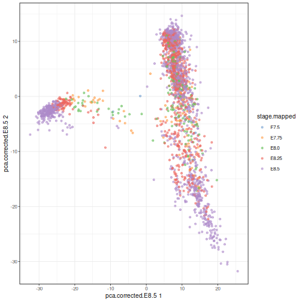
Exercise 1
Create a SingleCellExperiment object “from scratch”.
That means: start from a matrix (either randomly generated
or with some fake data in it) and add one or more columns as
colData.
The SingleCellExperiment constructor function can be
used to create a new SingleCellExperiment object.
R
mat <- matrix(runif(30), ncol = 5)
my_sce <- SingleCellExperiment(assays = list(logcounts = mat))
my_sce$my_col_info = runif(5)
my_sce
OUTPUT
class: SingleCellExperiment
dim: 6 5
metadata(0):
assays(1): logcounts
rownames: NULL
rowData names(0):
colnames: NULL
colData names(1): my_col_info
reducedDimNames(0):
mainExpName: NULL
altExpNames(0):Exercise 2
Combine two SingleCellExperiment objects. The
MouseGastrulationData package contains several datasets.
Download sample 6 of the chimera experiment. Use the cbind
function to combine the new data with the sce object
created before.
R
sce <- WTChimeraData(samples = 5)
sce6 <- WTChimeraData(samples = 6)
R
(combined_sce <- cbind(sce, sce6))
OUTPUT
class: SingleCellExperiment
dim: 29453 3458
metadata(0):
assays(1): counts
rownames(29453): ENSMUSG00000051951 ENSMUSG00000089699 ...
ENSMUSG00000095742 tomato-td
rowData names(2): ENSEMBL SYMBOL
colnames(3458): cell_9769 cell_9770 ... cell_13225 cell_13226
colData names(11): cell barcode ... doub.density sizeFactor
reducedDimNames(2): pca.corrected.E7.5 pca.corrected.E8.5
mainExpName: NULL
altExpNames(0):Note that column binding two objects might be nonsensical for some slots e.g. PCA embeddings.
- The Bioconductor project provides open-source software packages for the comprehension of high-throughput biological data.
- A
SingleCellExperimentobject is an extension of theSummarizedExperimentobject. -
SingleCellExperimentobjects contain specialized data fields for storing data unique to single-cell analyses, such as thereducedDimsfield.
References
- Pijuan-Sala B, Griffiths JA, Guibentif C et al. (2019). A single-cell molecular map of mouse gastrulation and early organogenesis. Nature 566, 7745:490-495.
Session Info
R
sessionInfo()
OUTPUT
R version 4.6.1 (2026-06-24)
Platform: x86_64-pc-linux-gnu
Running under: Ubuntu 24.04.4 LTS
Matrix products: default
BLAS: /usr/lib/x86_64-linux-gnu/openblas-pthread/libblas.so.3
LAPACK: /usr/lib/x86_64-linux-gnu/openblas-pthread/libopenblasp-r0.3.26.so; LAPACK version 3.12.0
locale:
[1] LC_CTYPE=en_US.UTF-8 LC_NUMERIC=C
[3] LC_TIME=en_US.UTF-8 LC_COLLATE=en_US.UTF-8
[5] LC_MONETARY=en_US.UTF-8 LC_MESSAGES=en_US.UTF-8
[7] LC_PAPER=en_US.UTF-8 LC_NAME=C
[9] LC_ADDRESS=C LC_TELEPHONE=C
[11] LC_MEASUREMENT=en_US.UTF-8 LC_IDENTIFICATION=C
time zone: Etc/UTC
tzcode source: system (glibc)
attached base packages:
[1] stats4 stats graphics grDevices utils datasets methods
[8] base
other attached packages:
[1] scater_1.40.2 ggplot2_4.0.3
[3] scuttle_1.22.0 MouseGastrulationData_1.26.0
[5] SpatialExperiment_1.22.0 SingleCellExperiment_1.34.0
[7] SummarizedExperiment_1.42.0 Biobase_2.72.0
[9] GenomicRanges_1.64.0 Seqinfo_1.2.0
[11] IRanges_2.46.0 S4Vectors_0.50.1
[13] BiocGenerics_0.58.1 generics_0.1.4
[15] MatrixGenerics_1.24.0 matrixStats_1.5.0
[17] BiocStyle_2.40.0
loaded via a namespace (and not attached):
[1] DBI_1.3.0 formatR_1.14 gridExtra_2.3.1
[4] httr2_1.3.0 rlang_1.3.0 magrittr_2.0.5
[7] otel_0.2.0 compiler_4.6.1 RSQLite_3.53.3
[10] png_0.1-9 vctrs_0.7.3 pkgconfig_2.0.3
[13] crayon_1.5.3 fastmap_1.2.0 dbplyr_2.6.0
[16] magick_2.9.1 XVector_0.52.0 labeling_0.4.3
[19] rmarkdown_2.31 ggbeeswarm_0.7.3 purrr_1.2.2
[22] bit_4.6.0 xfun_0.60 cachem_1.1.0
[25] beachmat_2.28.0 blob_1.3.0 DelayedArray_0.38.2
[28] BiocParallel_1.46.0 irlba_2.3.7 parallel_4.6.1
[31] R6_2.6.1 RColorBrewer_1.1-3 Rcpp_1.1.2
[34] knitr_1.51 Matrix_1.7-6 tidyselect_1.2.1
[37] abind_1.4-8 yaml_2.3.12 viridis_0.6.5
[40] codetools_0.2-20 curl_7.1.0 lattice_0.22-9
[43] tibble_3.3.1 withr_3.0.3 KEGGREST_1.52.2
[46] BumpyMatrix_1.20.0 S7_0.2.2 evaluate_1.0.5
[49] BiocFileCache_3.2.0 ExperimentHub_3.2.0 Biostrings_2.80.1
[52] pillar_1.11.1 BiocManager_1.30.27 filelock_1.0.3
[55] renv_1.2.4 BiocVersion_3.23.1 scales_1.4.0
[58] glue_1.8.1 tools_4.6.1 AnnotationHub_4.2.2
[61] BiocNeighbors_2.6.0 ScaledMatrix_1.20.0 grid_4.6.1
[64] AnnotationDbi_1.74.0 beeswarm_0.4.0 BiocSingular_1.28.0
[67] vipor_0.4.7 cli_3.6.6 rsvd_1.0.5
[70] rappdirs_0.3.4 S4Arrays_1.12.0 viridisLite_0.4.3
[73] dplyr_1.2.1 gtable_0.3.6 digest_0.6.39
[76] SparseArray_1.12.2 ggrepel_0.9.8 rjson_0.2.23
[79] farver_2.1.2 memoise_2.0.1 htmltools_0.5.9
[82] lifecycle_1.0.5 httr_1.4.8 bit64_4.8.2 Content from Exploratory data analysis and quality control
Last updated on 2026-09-01 | Edit this page
Overview
Questions
- How do I examine the quality of single-cell data?
- What data visualizations should I use during quality control in a single-cell analysis?
- How do I prepare single-cell data for analysis?
Objectives
- Determine and communicate the quality of single-cell data.
- Identify and filter empty droplets and doublets.
- Perform normalization, feature selection, and dimensionality reduction as parts of a typical single-cell analysis pipeline.
Setup and experimental design
As mentioned in the introduction, in this tutorial we will use the wild-type data from the Tal1 chimera experiment. These data are available through the MouseGastrulationData Bioconductor package, which contains several datasets.
In particular, the package contains the following samples that we will use for the tutorial:
- Sample 5: E8.5 injected cells (tomato positive), pool 3
- Sample 6: E8.5 host cells (tomato negative), pool 3
- Sample 7: E8.5 injected cells (tomato positive), pool 4
- Sample 8: E8.5 host cells (tomato negative), pool 4
- Sample 9: E8.5 injected cells (tomato positive), pool 5
- Sample 10: E8.5 host cells (tomato negative), pool 5
We start our analysis by selecting only sample 5, which contains the injected cells in one biological replicate. We download the “raw” data that contains all the droplets for which we have sequenced reads.
R
library(MouseGastrulationData)
library(DropletUtils)
library(ggplot2)
library(EnsDb.Mmusculus.v79)
library(scater)
library(scrapper)
library(scDblFinder)
sce <- WTChimeraData(samples = 5, type = "raw")
R
(sce <- sce[[1]])
OUTPUT
class: SingleCellExperiment
dim: 29453 522554
metadata(0):
assays(1): counts
rownames(29453): ENSMUSG00000051951 ENSMUSG00000089699 ...
ENSMUSG00000095742 tomato-td
rowData names(2): ENSEMBL SYMBOL
colnames(522554): AAACCTGAGAAACCAT AAACCTGAGAAACCGC ...
TTTGTCATCTTTACGT TTTGTCATCTTTCCTC
colData names(0):
reducedDimNames(0):
mainExpName: NULL
altExpNames(0):This is the same data we examined in the previous lesson.
We’ll be proceeding through the standard EDA and QC steps one by one,
but most of these are wrapped together in the helper function
analyze.se() which performs all the most common steps in
one command.
Droplet processing
From the experiment, we expect to have only a few thousand cells, while we can see that we have data for more than 500,000 droplets. It is likely that most of these droplets are empty and are capturing only ambient or background RNA.
Depending on your data source, identifying and discarding empty droplets may not be necessary. Some academic institutions have research cores dedicated to single cell work that perform the sample preparation and sequencing. Many of these cores will also perform empty droplet filtering and other initial QC steps. Specific details on the steps in common pipelines like 10x Genomics’ CellRanger can usually be found in the documentation that came with the sequencing material.
The main point is: if the sequencing outputs were provided to you by someone else, make sure to communicate with them about what pre-processing steps have been performed, if any.
We can visualize barcode read totals to visualize the distinction between empty droplets and properly profiled single cells in a so-called “knee plot”:
R
bcrank <- barcodeRanks(counts(sce))
# Only showing unique points for plotting speed.
uniq <- !duplicated(bcrank$rank)
line_df <- data.frame(cutoff = names(metadata(bcrank)),
value = unlist(metadata(bcrank)))
ggplot(bcrank[uniq,], aes(rank, total)) +
geom_point() +
geom_hline(data = line_df,
aes(color = cutoff,
yintercept = value),
lty = 2) +
scale_x_log10() +
scale_y_log10() +
labs(y = "Total UMI count")
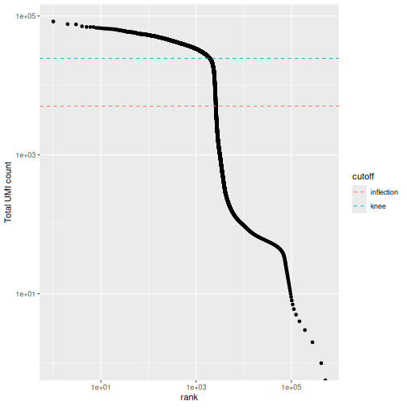
The distribution of total counts (called the unique molecular identifier or UMI count) exhibits a sharp transition between barcodes with large and small total counts, probably corresponding to cell-containing and empty droplets respectively.
A simple approach would be to apply a threshold on the total count to only retain those barcodes with large totals. However, this may unnecessarily discard libraries derived from cell types with low RNA content.
Challenge
What is the median number of total counts in the raw data?
R
median(bcrank$total)
OUTPUT
[1] 2Just 2! Clearly many barcodes produce practically no output.
Testing for empty droplets
A better approach is to test whether the expression profile for each cell barcode is significantly different from the ambient RNA pool1. Any significant deviation indicates that the barcode corresponds to a cell-containing droplet. This allows us to discriminate between well-sequenced empty droplets and droplets derived from cells with little RNA, both of which would have similar total counts.
We call cells at a false discovery rate (FDR) of 0.1%, meaning that no more than 0.1% of our called barcodes should be empty droplets on average.
R
# emptyDrops performs Monte Carlo simulations to compute p-values,
# so we need to set the seed to obtain reproducible results.
set.seed(100)
# this may take a few minutes
e.out <- emptyDrops(counts(sce))
summary(e.out$FDR <= 0.001)
OUTPUT
Mode FALSE TRUE NAs
logical 5919 3396 513239 R
(sce <- sce[,which(e.out$FDR <= 0.001)])
OUTPUT
class: SingleCellExperiment
dim: 29453 3396
metadata(0):
assays(1): counts
rownames(29453): ENSMUSG00000051951 ENSMUSG00000089699 ...
ENSMUSG00000095742 tomato-td
rowData names(2): ENSEMBL SYMBOL
colnames(3396): AAACCTGAGACTGTAA AAACCTGAGATGCCTT ... TTTGTCACATTCTCAT
TTTGTCATCTGAGTGT
colData names(0):
reducedDimNames(0):
mainExpName: NULL
altExpNames(0):The result confirms our expectation: only 3396 droplets contain a cell, while the large majority of droplets are empty.
Whenever your code involves the generation of random numbers, it’s a
good practice to set the random seed in R with
set.seed().
Setting the seed to a specific value (in the above example to 100) will cause the pseudo-random number generator to return the same pseudo-random numbers in the same order.
This allows us to write code with reproducible results, despite technically involving the generation of (pseudo-)random numbers.
Quality control
While we have removed empty droplets, this does not necessarily imply that all the cell-containing droplets should be kept for downstream analysis. In fact, some droplets could contain low-quality samples, due to cell damage or failure in library preparation.
Retaining these low-quality samples in the analysis could be problematic as they could:
- form their own cluster, complicating the interpretation of the results
- interfere with variance estimation and principal component analysis
- contain contaminating transcripts from ambient RNA
To mitigate these problems, we can check a few quality control (QC) metrics and, if needed, remove low-quality samples.
Choice of quality control metrics
There are many possible ways to define a set of quality control metrics, see for instance Cole 2019. Here, we keep it simple and consider only:
- the library size, defined as the total sum of counts across all relevant features for each cell;
- the number of expressed features in each cell, defined as the number of endogenous genes with non-zero counts for that cell;
- the proportion of reads mapped to genes in the mitochondrial genome.
In particular, high proportions of mitochondrial genes are indicative of poor-quality cells, presumably because of loss of cytoplasmic RNA from perforated cells. The reasoning is that, in the presence of modest damage, the holes in the cell membrane permit efflux of individual transcript molecules but are too small to allow mitochondria to escape, leading to a relative enrichment of mitochondrial transcripts. For single-nucleus RNA-seq experiments, high proportions are also useful as they can mark cells where the cytoplasm has not been successfully stripped.
First, we need to identify mitochondrial genes. We use the available
EnsDb mouse package available in Bioconductor, but a more
updated version of Ensembl can be used through the
AnnotationHub or biomaRt packages.
R
chr.loc <- mapIds(EnsDb.Mmusculus.v79,
keys = rownames(sce),
keytype = "GENEID",
column = "SEQNAME")
is.mito <- which(chr.loc == "MT")
We can use the scrapper package to compute a set of
quality control metrics, specifying that we want to use the
mitochondrial genes as a special set of features.
R
qc_df <- computeRnaQcMetrics(counts(sce),
subsets = list(mito = is.mito))
(colData(sce) <- cbind(colData(sce), qc_df))
OUTPUT
DataFrame with 3396 rows and 3 columns
sum detected subsets
<numeric> <integer> <DataFrame>
AAACCTGAGACTGTAA 27577 5418 0.0170795
AAACCTGAGATGCCTT 29309 5405 0.0231669
AAACCTGAGCAGCCTC 28795 5218 0.0166696
AAACCTGCATACTCTT 34794 4781 0.0142553
AAACCTGGTGGTACAG 262 229 0.0000000
... ... ... ...
TTTGGTTTCGCCATAA 38398 6020 0.00656284
TTTGTCACACCCTATC 3013 1451 0.04082310
TTTGTCACACCGGAAA 820 157 0.79878049
TTTGTCACATTCTCAT 1472 675 0.40692935
TTTGTCATCTGAGTGT 267 233 0.05992509Now that we have computed the metrics, we have to decide on thresholds to define high- and low-quality samples. We could check how many cells are above/below a certain fixed threshold. For instance,
R
table(qc_df$sum < 1e4)
OUTPUT
FALSE TRUE
2478 918 R
table(qc_df$subsets$mito > .10)
OUTPUT
FALSE TRUE
2747 649 or we could look at the distribution of such metrics and use a data adaptive threshold.
R
summary(qc_df$detected)
OUTPUT
Min. 1st Qu. Median Mean 3rd Qu. Max.
45 2340 5074 4120 5628 7908 R
summary(qc_df$subsets$mito)
OUTPUT
Min. 1st Qu. Median Mean 3rd Qu. Max.
0.00000 0.01206 0.01680 0.10062 0.02890 0.93368 We can use the perCellQCFilters function to apply a set
of common adaptive filters to identify low-quality cells. By default, we
consider a value to be an outlier if it is more than 3 median absolute
deviations (MADs) from the median in the “problematic” direction. This
is loosely motivated by the fact that such a filter will retain 99% of
non-outlier values that follow a normal distribution.
R
(thresh <- suggestRnaQcThresholds(qc_df))
OUTPUT
$sum
[1] 5377.587
$detected
[1] 2725.544
$subsets
mito
0.04318437 R
sce$keep <- filterRnaQcMetrics(thresh, qc_df)
Challenge
Maybe our sample preparation was poor and we want the QC to be more strict. How could we change the set the QC filtering to use 2.5 MADs as the threshold for outlier calling?
You set nmads = 2.5 like so:
R
thresh_strict <- suggestRnaQcThresholds(qc_df, num.mads = 2.5)
You would then need to reassign the keep column as well,
but we’ll stick with the 3 MADs default for now.
Diagnostic plots
It is always a good idea to check the distribution of the QC metrics and to visualize the cells that were removed, to identify possible problems with the procedure. In particular, we expect to have few outliers and with a marked difference from “regular” cells (e.g., a bimodal distribution or a long tail). Moreover, if there are too many discarded cells, further exploration might be needed.
R
plotColData(sce, y = "sum", colour_by = "keep") +
labs(title = "Total count")
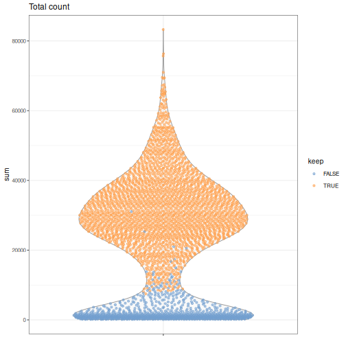
R
plotColData(sce, y = "detected", colour_by = "keep") +
labs(title = "Detected features")
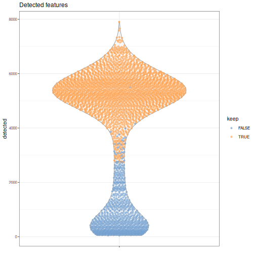
R
plotColData(sce, y = sce$subsets, colour_by = "keep") +
labs(title = "Mito percent")
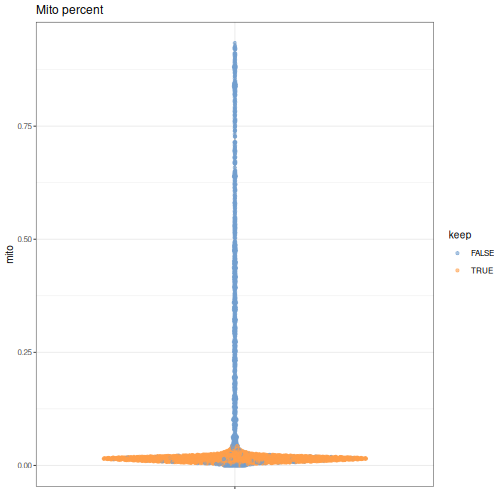
While the univariate distribution of QC metrics can give some insight on the quality of the sample, often looking at the bivariate distribution of QC metrics is useful, e.g., to confirm that there are no cells with both large total counts and large mitochondrial counts, to ensure that we are not inadvertently removing high-quality cells that happen to be highly metabolically active.
R
plotColData(sce, x ="sum", y = sce$subsets, colour_by = "keep")
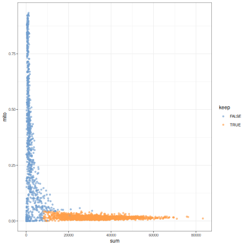
It could also be a good idea to perform a differential expression analysis between retained and discarded cells to check wether we are removing an unusual cell population rather than low-quality libraries (see Section 1.5 of OSCA advanced).
Once we are happy with the results, we can discard the low-quality cells by subsetting the original object.
R
(sce <- sce[,sce$keep])
OUTPUT
class: SingleCellExperiment
dim: 29453 2474
metadata(0):
assays(1): counts
rownames(29453): ENSMUSG00000051951 ENSMUSG00000089699 ...
ENSMUSG00000095742 tomato-td
rowData names(2): ENSEMBL SYMBOL
colnames(2474): AAACCTGAGACTGTAA AAACCTGAGATGCCTT ... TTTGGTTTCAGTCAGT
TTTGGTTTCGCCATAA
colData names(4): sum detected subsets keep
reducedDimNames(0):
mainExpName: NULL
altExpNames(0):Normalization
Systematic differences in sequencing coverage between libraries are often observed in single-cell RNA sequencing data. They typically arise from technical differences in cDNA capture or PCR amplification efficiency across cells, attributable to the difficulty of achieving consistent library preparation with minimal starting material2. Normalization aims to remove these differences such that they do not interfere with comparisons of the expression profiles between cells. The hope is that the observed heterogeneity or differential expression within the cell population are driven by biology and not technical biases.
We will mostly focus our attention on scaling normalization, which is the simplest and most commonly used class of normalization strategies. This involves dividing all counts for each cell by a cell-specific scaling factor, often called a size factor. The assumption here is that any cell-specific bias (e.g., in capture or amplification efficiency) affects all genes equally via scaling of the expected mean count for that cell. The size factor for each cell represents the estimate of the relative bias in that cell, so division of its counts by its size factor should remove that bias. The resulting “normalized expression values” can then be used for downstream analyses such as clustering and dimensionality reduction.
The simplest and most natural strategy would be to normalize by the total sum of counts across all genes for each cell. This is often called the library size normalization.
The library size factor for each cell is directly proportional to its library size. These size factors are often scaled such that the mean size factor across all cells is equal to 1. This ensures that the normalized expression values are typically on the same scale as the original counts.
R
lib.sf <- centerSizeFactors(sce$sum)
summary(lib.sf)
OUTPUT
Min. 1st Qu. Median Mean 3rd Qu. Max.
0.2323 0.7878 0.9631 1.0000 1.1806 2.5846 R
sf_df <- data.frame(size_factor = lib.sf)
ggplot(sf_df, aes(size_factor)) +
geom_histogram() +
scale_x_log10()
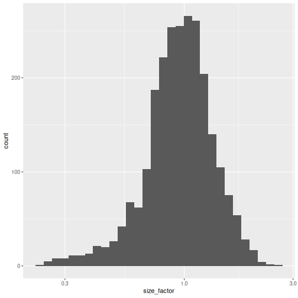
Now we can use the size factors to normalize the counts:
R
(sce <- normalizeRnaCounts.se(sce, size.factors = lib.sf))
OUTPUT
class: SingleCellExperiment
dim: 29453 2474
metadata(0):
assays(2): counts logcounts
rownames(29453): ENSMUSG00000051951 ENSMUSG00000089699 ...
ENSMUSG00000095742 tomato-td
rowData names(2): ENSEMBL SYMBOL
colnames(2474): AAACCTGAGACTGTAA AAACCTGAGATGCCTT ... TTTGGTTTCAGTCAGT
TTTGGTTTCGCCATAA
colData names(5): sum detected subsets keep sizeFactor
reducedDimNames(0):
mainExpName: NULL
altExpNames(0):There are more thoughtful ways to estimate cell-wise normalization
factors (see scuttle::pooledSizeFactors()), but the broader
single cell field has more or less decided to ignore normalization bias
and use library size factors with a “meh, good enough” attitude. A
statistically rigorous handling of this detail would require integrating
over the uncertainty in the normalizing factor (as is sometimes done
for microbiome data), but this is generally regarded as too
inexpedient for single-cell data.
Feature Selection
The typical next steps in the analysis of single-cell data are dimensionality reduction and clustering, which involve measuring the similarity between cells.
The choice of genes to use in this calculation has a major impact on the results. We want to select genes that contain useful information about the biology of the system while removing genes that contain only random noise. This aims to preserve interesting biological structure without the variance that obscures that structure, and to reduce the size of the data to improve computational efficiency of later steps.
Quantifying per-gene variation
The simplest approach to feature selection is to select the most variable genes based on their log-normalized expression across the population. This is motivated by practical idea that if we’re going to try to explain variation in gene expression by biological factors, those genes need to have variance to explain.
Calculation of the per-gene variance is simple but feature selection
requires modeling of the mean-variance relationship. The
log-transformation is not a variance stabilizing transformation in most
cases, which means that the total variance of a gene is driven more by
its abundance than its underlying biological heterogeneity. To account
for this, the modelGeneVar function fits a trend to the
variance with respect to abundance across all genes.
R
stats_df <- modelGeneVariances(logcounts(sce))$statistics
ggplot(stats_df, aes(means, variances)) +
geom_point(pch = 15, size = .4) +
geom_point(aes(y = fitted),
color = "dodgerblue",
size = .3) +
labs(x = "Mean of log-expression",
y = "Variance of log-expression")
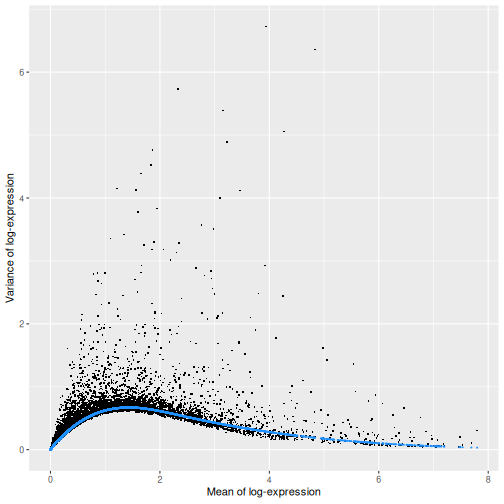
The blue line represents the uninteresting “technical” variance for any given gene abundance. The genes with a lot of additional variance exhibit interesting “biological” variation.
Selecting highly variable genes
The next step is to identify HVGs to use in downstream analyses. A larger set will assure that we do not remove important genes, at the cost of potentially increasing noise. Typically, we restrict ourselves to the top \(n\) genes, here we chose \(n = 1000\), but this choice should be guided by prior biological knowledge; for instance, we may expect that only about 10% of genes to be differentially expressed across our cell populations and hence select 10% of genes as highly variable.
Here we use chooseRnaHvgs.se() to model the variances
and add them to a column hvg on the SCE in one step:
R
sce <- chooseRnaHvgs.se(sce, top = 1000)
# this calls modelGeneVariances internally
rowData(sce) |> head()
OUTPUT
DataFrame with 6 rows and 7 columns
ENSEMBL SYMBOL means variances
<character> <character> <numeric> <numeric>
ENSMUSG00000051951 ENSMUSG00000051951 Xkr4 0.002572569 0.002943073
ENSMUSG00000089699 ENSMUSG00000089699 Gm1992 0.000000000 0.000000000
ENSMUSG00000102343 ENSMUSG00000102343 Gm37381 0.000000000 0.000000000
ENSMUSG00000025900 ENSMUSG00000025900 Rp1 0.000797034 0.000873815
ENSMUSG00000025902 ENSMUSG00000025902 Sox17 0.171171833 0.384706077
ENSMUSG00000104328 ENSMUSG00000104328 Gm37323 0.000272068 0.000183127
fitted residuals hvg
<numeric> <numeric> <logical>
ENSMUSG00000051951 0.003006277 -6.32040e-05 FALSE
ENSMUSG00000089699 0.000000000 0.00000e+00 FALSE
ENSMUSG00000102343 0.000000000 0.00000e+00 FALSE
ENSMUSG00000025900 0.000931406 -5.75911e-05 FALSE
ENSMUSG00000025902 0.170613259 2.14093e-01 TRUE
ENSMUSG00000104328 0.000317935 -1.34808e-04 FALSEChallenge
Imagine you have data that were prepared by three people with varying level of experience, which leads to varying technical noise. How can you account for this blocking structure when selecting HVGs?
modelGeneVariances() can take a block
argument.
Use the block argument in the call to
modelGeneVariances() like so. We don’t have experimenter
information in this dataset, so in order to have some names to work with
we assign them randomly from a set of names.
R
sce$experimenter = factor(sample(c("Perry", "Merry", "Gary"),
replace = TRUE,
size = ncol(sce)))
(blocked_variance_df = modelGeneVariances(logcounts(sce),
block = sce$experimenter))
Blocked models are evaluated on each block separately then combined.
Dimensionality Reduction
Many scRNA-seq analysis procedures involve comparing cells based on their expression values across multiple genes. For example, clustering aims to identify cells with similar transcriptomic profiles by computing Euclidean distances across genes. In these applications, each individual gene represents a dimension of the data, hence we can think of the data as “living” in a ten-thousand-dimensional space.
As the name suggests, dimensionality reduction aims to reduce the number of dimensions, while preserving as much as possible of the original information. This obviously reduces the computational work (e.g., it is easier to compute distance in lower-dimensional spaces), and more importantly leads to less noisy and more interpretable results (cf. the curse of dimensionality).
Principal Component Analysis (PCA)
Principal component analysis (PCA) is a dimensionality reduction technique that provides a parsimonious summarization of the data by replacing the original variables (genes) by fewer linear combinations of these variables, that are orthogonal and have successively maximal variance. Such linear combinations seek to “separate out” the observations (cells), while losing as little information as possible.
Without getting into the details, one nice feature of PCA is that the principal components (PCs) are ordered by how much variance of the original data they “explain”. Furthermore, by focusing on the top \(k\) PC we are focusing on the most important directions of variability, which hopefully correspond to biological rather than technical variance. (It is however good practice to check this by e.g. looking at correlation between technical QC metrics and PCs).
One simple way to maximize our chance of capturing biological variation is by computing the PCs starting from the highly variable genes identified before.
R
(sce <- runPca.se(sce, features = rowData(sce)$hvg))
OUTPUT
class: SingleCellExperiment
dim: 29453 2474
metadata(1): PCA
assays(2): counts logcounts
rownames(29453): ENSMUSG00000051951 ENSMUSG00000089699 ...
ENSMUSG00000095742 tomato-td
rowData names(7): ENSEMBL SYMBOL ... residuals hvg
colnames(2474): AAACCTGAGACTGTAA AAACCTGAGATGCCTT ... TTTGGTTTCAGTCAGT
TTTGGTTTCGCCATAA
colData names(5): sum detected subsets keep sizeFactor
reducedDimNames(1): PCA
mainExpName: NULL
altExpNames(0):By default, runPca.se computes the first 25 principal
components. The metadata on the PCA is added to
metadata(sce). The PC embeddings are added to a
reducedDim(). Let’s make a graph of the percent variation
explained:
R
pca_l <- metadata(sce)$PCA
pct_var_df <- data.frame(PC = 1:25,
pct_var = 100 * pca_l$variance.explained /
pca_l$total.variance)
ggplot(pct_var_df,
aes(PC, pct_var)) +
geom_point() +
geom_segment(aes(xend = PC, yend = 0)) +
labs(y = "Variance explained (%)")
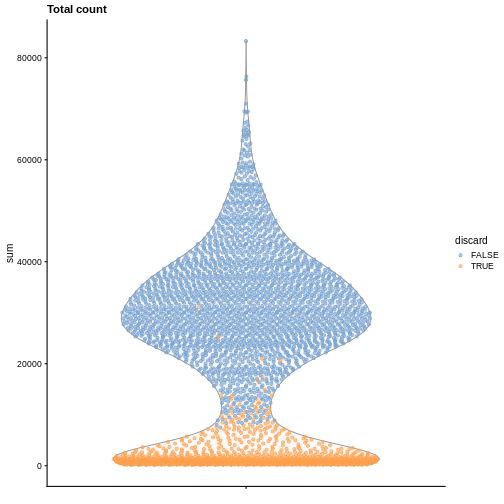
You can see the first two PCs capture the largest amount of variation, but in this case you have to take the first 8 PCs before you’ve captured 50% of the total.
And we can of course visualize the first 2-3 components, perhaps color-coding each point by an interesting feature, in this case the total number of UMIs per cell.
R
plotPCA(sce, colour_by = "sum")
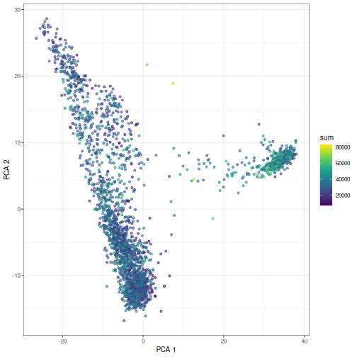
It can be helpful to compare pairs of PCs. This can be done with the
ncomponents argument to plotReducedDim(). For
example if one batch or cell type splits off on a particular PC, this
can help visualize the effect of that.
R
plotReducedDim(sce, dimred = "PCA", ncomponents = 3)
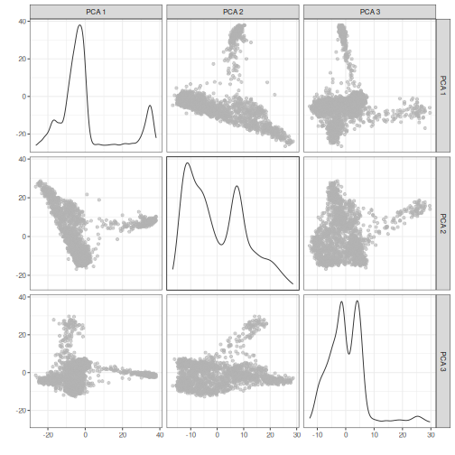
Challenge
Plot the first two PCs, coloring cells by
ENSMUSG00000055609. That’s the gene identifier for Hba-x,
one of the HVGs.
R
plotPCA(sce, colour_by = "ENSMUSG00000055609")
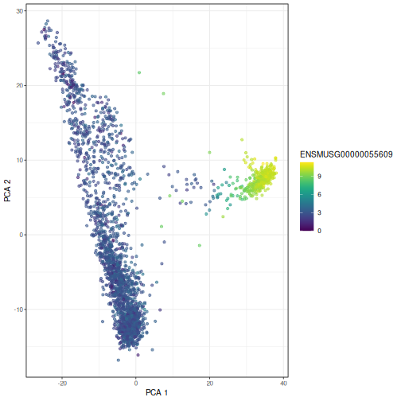
Non-linear methods
While PCA is a simple and effective way to visualize (and interpret!) scRNA-seq data, non-linear methods such as t-SNE (t-stochastic neighbor embedding) and UMAP (uniform manifold approximation and projection) have gained much popularity in the literature.
These methods attempt to find a low-dimensional representation of the data that attempt to preserve pair-wise distance and structure in high-dimensional gene space as best as possible.
The commands to fit t-SNE coordinates and plot them are what you would expect:
R
set.seed(100)
sce <- runTsne.se(sce)
plotTSNE(sce)
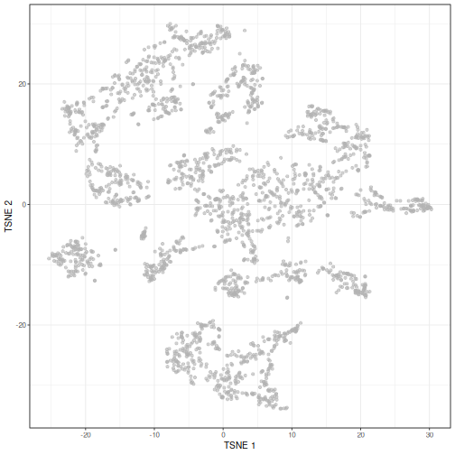
Challenge
Plot the TSNE coordinates, coloring cells by another HVG.
R
rowData(sce)[rowData(sce)$hvg,][1:3,] # pick your favorite
OUTPUT
DataFrame with 3 rows and 7 columns
ENSEMBL SYMBOL means variances fitted
<character> <character> <numeric> <numeric> <numeric>
ENSMUSG00000025902 ENSMUSG00000025902 Sox17 0.171172 0.384706 0.170613
ENSMUSG00000061024 ENSMUSG00000061024 Rrs1 2.750415 0.746111 0.473188
ENSMUSG00000026147 ENSMUSG00000026147 Col9a1 0.363768 0.532111 0.329631
residuals hvg
<numeric> <logical>
ENSMUSG00000025902 0.214093 TRUE
ENSMUSG00000061024 0.272922 TRUE
ENSMUSG00000026147 0.202480 TRUER
plotTSNE(sce, colour_by = "ENSMUSG00000025902") +
labs(title = "Sox17")
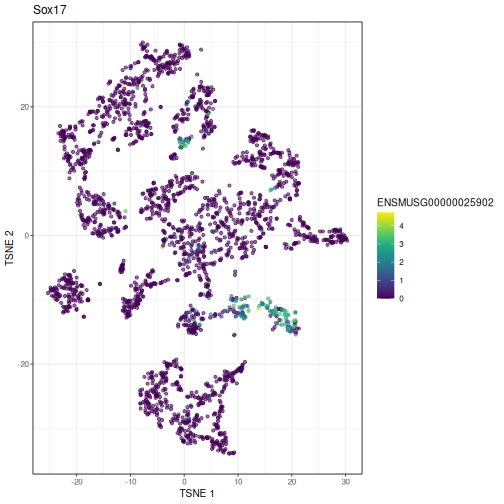
Fitting and plotting UMAP coordinates are similar:
R
set.seed(111)
sce <- runUmap.se(sce)
plotUMAP(sce)
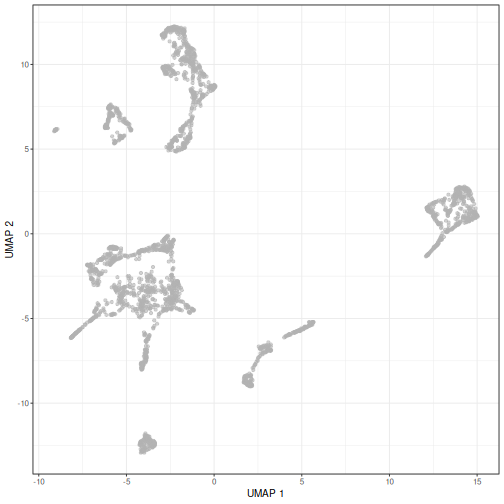
It is easy to over-interpret t-SNE and UMAP plots. We note that the relative sizes and positions of the visual clusters may be misleading, as they tend to inflate dense clusters and compress sparse ones, such that we cannot use the size as a measure of subpopulation heterogeneity.
In addition, these methods are not guaranteed to preserve the global structure of the data (e.g., the relative locations of non-neighboring clusters), such that we cannot use their positions to determine relationships between distant clusters.
Note that the sce object now includes all the computed
dimensionality reduced representations of the data for ease of reusing
and replotting without the need for recomputing. Note the added
reducedDimNames row when printing sce
here:
R
sce
OUTPUT
class: SingleCellExperiment
dim: 29453 2474
metadata(1): PCA
assays(2): counts logcounts
rownames(29453): ENSMUSG00000051951 ENSMUSG00000089699 ...
ENSMUSG00000095742 tomato-td
rowData names(7): ENSEMBL SYMBOL ... residuals hvg
colnames(2474): AAACCTGAGACTGTAA AAACCTGAGATGCCTT ... TTTGGTTTCAGTCAGT
TTTGGTTTCGCCATAA
colData names(5): sum detected subsets keep sizeFactor
reducedDimNames(3): PCA TSNE UMAP
mainExpName: NULL
altExpNames(0):Despite their shortcomings, t-SNE and UMAP can be useful visualization techniques. When using them, it is important to consider that they are stochastic methods that involve a random component (each run will lead to different plots) and that there are key parameters to be set that change the results substantially (e.g., the “perplexity” parameter of t-SNE).
Challenge
Re-run the UMAP for the same sample starting from the pre-processed
data (i.e. not type = "raw"). What looks the same? What
looks different?
R
set.seed(111)
sce5 <- WTChimeraData(samples = 5) |>
normalizeRnaCounts.se() |>
chooseRnaHvgs.se()
sce5 <- sce5 |>
runPca.se(features = rowData(sce5)$hvg) |>
runUmap.se()
plotUMAP(sce5)
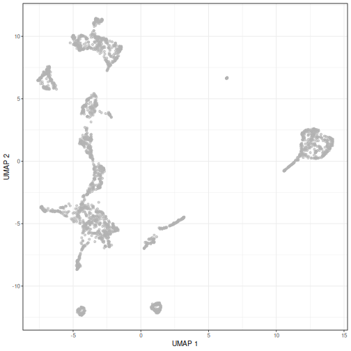
Given that it’s the same cells processed through a very similar pipeline, the result should look very similar. There’s a slight difference in the total number of cells, probably because the official processing pipeline didn’t use the exact same random seed / QC arguments as us. Note that we also skipped the mitochondrial proportion filtering here too.
But you’ll notice that even though the shape of the structures are similar, they look slightly distorted. If the upstream QC parameters change, the downstream output visualizations will also change.
Doublet identification
Doublets are artifactual libraries generated from two cells. They typically arise due to errors in cell sorting or capture. Specifically, in droplet-based protocols, it may happen that two cells are captured in the same droplet.
Doublets are obviously undesirable when the aim is to characterize populations at the single-cell level. In particular, doublets can be mistaken for intermediate populations or transitory states that do not actually exist. Thus, it is desirable to identify and remove doublet libraries so that they do not compromise interpretation of the results.
It is not easy to computationally identify doublets as they can be hard to distinguish from transient states and/or cell populations with high RNA content. When possible, it is good to rely on experimental strategies to minimize doublets, e.g., by using genetic variation (e.g., pooling multiple donors in one run) or antibody tagging (e.g., CITE-seq).
There are several computational methods to identify doublets; we describe only one here based on in-silico simulation of doublets.
Computing doublet densities
At a high level, the algorithm can be defined by the following steps:
- Simulate thousands of doublets by adding together two randomly chosen single-cell profiles.
- For each original cell, compute the density of simulated doublets in the surrounding neighborhood.
- For each original cell, compute the density of other observed cells in the neighborhood.
- Return the ratio between the two densities as a “doublet score” for each cell.
Intuitively, if a “cell” is surrounded only by simulated doublets is very likely to be a doublet itself.
This approach is implemented below using the scDblFinder
library. We then visualize the scores in a t-SNE plot.
R
set.seed(100)
sce <- scDblFinder(sce)
plotTSNE(sce, colour_by = "scDblFinder.class")
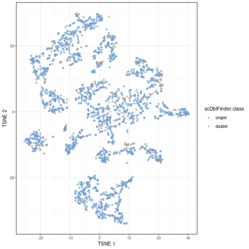
One way to determine whether a cell is in a real transient state or it is a doublet is to check the number of detected genes and total UMI counts.
R
plotColData(sce, "detected", "sum", colour_by = "scDblFinder.score")
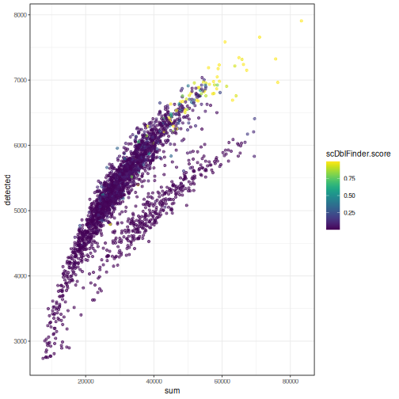
R
plotColData(sce, "detected", "sum", colour_by = "scDblFinder.class")
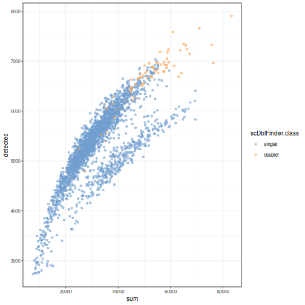
Discarding doublets is generally best in order to avoid biases in downstream analysis (e.g. differential expression).
Exercises
Exercise 1: analyze.se
Many of the functions in this lesson are part of a standard pipeline,
and hence have been composed into one utility function
analyze.se(). Read the steps that are and are not covered
on the details section of the help page ?analyze.se, then
try running this function on sample 7 from the WTChimeraData.
analyze.se() doesn’t do empty droplet detection.
R
sce2 <- WTChimeraData(samples = 7, type = "raw")
R
sce2 <- sce2[[1]]
e.out <- emptyDrops(counts(sce2))
sce2 <- sce2[,which(e.out$FDR <= 0.001)]
mito_list <- list(mito = grep("^mt-", rowData(sce2)$SYMBOL))
(res <- analyze.se(sce2,
rna.qc.subsets = mito_list))
OUTPUT
$x
class: SingleCellExperiment
dim: 29453 2970
metadata(2): qc PCA
assays(2): counts logcounts
rownames(29453): ENSMUSG00000051951 ENSMUSG00000089699 ...
ENSMUSG00000095742 tomato-td
rowData names(7): ENSEMBL SYMBOL ... residuals hvg
colnames(2970): AAACCTGAGACAAGCC AAACCTGAGCGTGAGT ... TTTGTCAGTGACGCCT
TTTGTCATCTGAAAGA
colData names(6): sum detected ... sizeFactor graph.cluster
reducedDimNames(3): PCA TSNE UMAP
mainExpName: NULL
altExpNames(0):
$markers
$markers$rna
List of length 14
names(14): 1 2 3 4 5 6 7 8 9 10 11 12 13 14You can see it performs all the major steps in one function call. The empty droplet detection step isn’t necessary on many modern datasets since it’s commonly handled by upstream steps e.g. CellRanger.
Exercise 2: PBMC Data
The DropletTestFiles
package includes the raw output from Cell Ranger of the peripheral
blood mononuclear cell (PBMC) dataset from 10X Genomics, publicly
available from the 10X Genomics website. Repeat the analysis of this
vignette using those data.
The hint demonstrates how to identify, download, extract, and read
the data starting from the help documentation of
?DropletTestFiles::listTestFiles, but try working through
those steps on your own for extra challenge (they’re useful skills to
develop in practice).
R
library(DropletTestFiles)
set.seed(100)
listTestFiles(dataset = "tenx-3.1.0-5k_pbmc_protein_v3") # look up the remote data path of the raw data
raw_rdatapath <- "DropletTestFiles/tenx-3.1.0-5k_pbmc_protein_v3/1.0.0/raw.tar.gz"
local_path <- getTestFile(raw_rdatapath, prefix = FALSE)
file.copy(local_path,
paste0(local_path, ".tar.gz"))
untar(paste0(local_path, ".tar.gz"),
exdir = dirname(local_path))
sce <- read10xCounts(file.path(dirname(local_path), "raw_feature_bc_matrix/"))
After getting the data and running, we re-do many of the steps above
in one step with the aforementioned analyze.se()
function:
R
e.out <- emptyDrops(counts(sce))
sce <- sce[,which(e.out$FDR <= 0.001)]
mito_i <- grep("^MT-", rowData(sce)$Symbol)
res <- analyze.se(sce,
num.threads = 4,
rna.qc.subsets = list(mito = mito_i))
sce <- res[[1]]
sce <- scDblFinder(sce,
processing = scrapper_proc)
Extension challenge 1: Spike-ins
Some sophisticated experiments perform additional steps so that they can estimate size factors from so-called “spike-ins”. Judging by the name, what do you think “spike-ins” are, and what additional steps are required to use them?
Spike-ins are deliberately-introduced exogeneous RNA from an exotic or synthetic source at a known concentration. This provides a known signal to normalize against. Exotic (e.g. soil bacteria RNA in a study of human cells) or synthetic RNA is used in order to avoid confusing spike-in RNA with sample RNA. This has the obvious advantage of accounting for cell-wise variation, but can substantially increase the amount of sample-preparation work.
Extension challenge 2: Background research
Run an internet search for some of the most highly variable genes we identified in the feature selection section. See if you can identify the type of protein they produce or what sort of process they’re involved in. Recall that these samples come from developing mouse embryoes. Do the genes in question make biological sense to you?
Extension challenge 3: Reduced dimensionality representations
Can dimensionality reduction techniques provide a perfectly accurate representation of the data?
No. Mathematically, this would require the data to fall on a two-dimensional plane (for linear methods like PCA) or a smooth 2D manifold (for methods like UMAP). You can be confident that this will never happen in real-world data, so the reduction from ~2500-dimensional gene space to two-dimensional plot space always involves some degree of information loss.
- Empty droplets, i.e. droplets that do not contain intact cells and
that capture only ambient or background RNA, should be removed prior to
an analysis. The
emptyDropsfunction from the DropletUtils package can be used to identify empty droplets. - Doublets, i.e. instances where two cells are captured in the same
droplet, should also be removed prior to an analysis. The
scDblFinder()function from the scDblFinder package can be used to identify doublets. - Quality control (QC) uses metrics such as library size, number of expressed features, and mitochondrial read proportion, based on which low-quality cells can be detected and filtered out. Diagnostic plots of the chosen QC metrics are important to identify possible issues.
- Normalization is required to account for systematic differences in sequencing coverage between libraries and to make measurements comparable between cells. Library size normalization is the most commonly used normalization strategy, and involves dividing all counts for each cell by a cell-specific scaling factor.
- Feature selection aims at selecting genes that contain useful
information about the biology of the system while removing genes that
contain only random noise. Calculate per-gene variance with the
modelGeneVariances()function and select highly-variable genes withchooseRnaHvgs.se(). - Dimensionality reduction aims at reducing the computational work and at obtaining less noisy and more interpretable results. PCA is a simple and effective linear dimensionality reduction technique that provides interpretable results for further analysis such as clustering of cells. Non-linear approaches such as UMAP and t-SNE can be useful for visualization, but the resulting representations should not be used in downstream analysis.
Session Info
R
sessionInfo()
OUTPUT
R version 4.6.1 (2026-06-24)
Platform: x86_64-pc-linux-gnu
Running under: Ubuntu 24.04.4 LTS
Matrix products: default
BLAS: /usr/lib/x86_64-linux-gnu/openblas-pthread/libblas.so.3
LAPACK: /usr/lib/x86_64-linux-gnu/openblas-pthread/libopenblasp-r0.3.26.so; LAPACK version 3.12.0
locale:
[1] LC_CTYPE=en_US.UTF-8 LC_NUMERIC=C
[3] LC_TIME=en_US.UTF-8 LC_COLLATE=en_US.UTF-8
[5] LC_MONETARY=en_US.UTF-8 LC_MESSAGES=en_US.UTF-8
[7] LC_PAPER=en_US.UTF-8 LC_NAME=C
[9] LC_ADDRESS=C LC_TELEPHONE=C
[11] LC_MEASUREMENT=en_US.UTF-8 LC_IDENTIFICATION=C
time zone: Etc/UTC
tzcode source: system (glibc)
attached base packages:
[1] stats4 stats graphics grDevices utils datasets methods
[8] base
other attached packages:
[1] scDblFinder_1.26.7 scrapper_1.6.3
[3] scater_1.40.2 scuttle_1.22.0
[5] EnsDb.Mmusculus.v79_2.99.0 ensembldb_2.36.1
[7] AnnotationFilter_1.36.0 GenomicFeatures_1.64.0
[9] AnnotationDbi_1.74.0 ggplot2_4.0.3
[11] DropletUtils_1.32.0 MouseGastrulationData_1.26.0
[13] SpatialExperiment_1.22.0 SingleCellExperiment_1.34.0
[15] SummarizedExperiment_1.42.0 Biobase_2.72.0
[17] GenomicRanges_1.64.0 Seqinfo_1.2.0
[19] IRanges_2.46.0 S4Vectors_0.50.1
[21] BiocGenerics_0.58.1 generics_0.1.4
[23] MatrixGenerics_1.24.0 matrixStats_1.5.0
[25] BiocStyle_2.40.0
loaded via a namespace (and not attached):
[1] RColorBrewer_1.1-3 jsonlite_2.0.0
[3] magrittr_2.0.5 ggbeeswarm_0.7.3
[5] magick_2.9.1 farver_2.1.2
[7] rmarkdown_2.31 BiocIO_1.22.0
[9] vctrs_0.7.3 memoise_2.0.1
[11] Rsamtools_2.28.0 DelayedMatrixStats_1.34.0
[13] RCurl_1.98-1.19 htmltools_0.5.9
[15] S4Arrays_1.12.0 AnnotationHub_4.2.2
[17] curl_7.1.0 BiocNeighbors_2.6.0
[19] xgboost_3.2.1.1 Rhdf5lib_2.0.0
[21] SparseArray_1.12.2 rhdf5_2.56.0
[23] httr2_1.3.0 cachem_1.1.0
[25] GenomicAlignments_1.48.0 igraph_2.3.3
[27] lifecycle_1.0.5 pkgconfig_2.0.3
[29] rsvd_1.0.5 Matrix_1.7-6
[31] R6_2.6.1 fastmap_1.2.0
[33] digest_0.6.39 dqrng_0.4.1
[35] irlba_2.3.7 ExperimentHub_3.2.0
[37] RSQLite_3.53.3 beachmat_2.28.0
[39] labeling_0.4.3 filelock_1.0.3
[41] httr_1.4.8 abind_1.4-8
[43] compiler_4.6.1 bit64_4.8.2
[45] withr_3.0.3 S7_0.2.2
[47] BiocParallel_1.46.0 viridis_0.6.5
[49] DBI_1.3.0 HDF5Array_1.40.0
[51] R.utils_2.13.0 MASS_7.3-66
[53] rappdirs_0.3.4 DelayedArray_0.38.2
[55] bluster_1.22.0 rjson_0.2.23
[57] tools_4.6.1 vipor_0.4.7
[59] otel_0.2.0 beeswarm_0.4.0
[61] R.oo_1.27.1 glue_1.8.1
[63] h5mread_1.4.0 restfulr_0.0.17
[65] rhdf5filters_1.24.1 grid_4.6.1
[67] cluster_2.1.8.3 gtable_0.3.6
[69] R.methodsS3_1.8.2 data.table_1.18.4
[71] metapod_1.20.0 BiocSingular_1.28.0
[73] ScaledMatrix_1.20.0 XVector_0.52.0
[75] ggrepel_0.9.8 BiocVersion_3.23.1
[77] pillar_1.11.1 limma_3.68.4
[79] BumpyMatrix_1.20.0 dplyr_1.2.1
[81] BiocFileCache_3.2.0 lattice_0.22-9
[83] renv_1.2.4 rtracklayer_1.72.0
[85] bit_4.6.0 tidyselect_1.2.1
[87] locfit_1.5-9.12 Biostrings_2.80.1
[89] knitr_1.51 gridExtra_2.3.1
[91] ProtGenerics_1.44.0 edgeR_4.10.1
[93] xfun_0.60 statmod_1.5.2
[95] UCSC.utils_1.8.0 lazyeval_0.2.3
[97] yaml_2.3.12 evaluate_1.0.5
[99] codetools_0.2-20 cigarillo_1.2.1
[101] tibble_3.3.1 BiocManager_1.30.27
[103] cli_3.6.6 Rcpp_1.1.2
[105] GenomeInfoDb_1.48.0 dbplyr_2.6.0
[107] png_0.1-9 XML_3.99-0.23
[109] parallel_4.6.1 blob_1.3.0
[111] scran_1.40.0 sparseMatrixStats_1.24.0
[113] bitops_1.1-0 viridisLite_0.4.3
[115] scales_1.4.0 purrr_1.2.2
[117] crayon_1.5.3 rlang_1.3.0
[119] formatR_1.14 KEGGREST_1.52.2 Content from Cell type annotation
Last updated on 2026-09-01 | Edit this page
Overview
Questions
- How can we identify groups of cells with similar expression profiles?
- How can we identify genes that drive separation between these groups of cells?
- How to leverage reference datasets and known marker genes for the cell type annotation of new datasets?
Objectives
- Identify groups of cells by clustering cells based on gene expression patterns.
- Identify marker genes through testing for differential expression between clusters.
- Annotate cell types through annotation transfer from reference datasets.
- Annotate cell types through marker gene set enrichment testing.
Setup
Again we’ll start by loading the libraries we’ll be using:
R
library(AUCell)
library(MouseGastrulationData)
library(SingleR)
library(bluster)
library(scater)
library(scrapper)
library(pheatmap)
library(GSEABase)
Data retrieval
We’ll be using the fifth processed sample from the WT chimeric mouse embryo data:
R
sce <- WTChimeraData(samples = 5, type = "processed")
sce
OUTPUT
class: SingleCellExperiment
dim: 29453 2411
metadata(0):
assays(1): counts
rownames(29453): ENSMUSG00000051951 ENSMUSG00000089699 ...
ENSMUSG00000095742 tomato-td
rowData names(2): ENSEMBL SYMBOL
colnames(2411): cell_9769 cell_9770 ... cell_12178 cell_12179
colData names(11): cell barcode ... doub.density sizeFactor
reducedDimNames(2): pca.corrected.E7.5 pca.corrected.E8.5
mainExpName: NULL
altExpNames(0):To speed up the computations, we take a random subset of 1,000 cells.
R
set.seed(123)
ind <- sample(ncol(sce), 1000)
sce <- sce[,ind]
Preprocessing
The SCE object needs to contain log-normalized expression counts as well as PCA coordinates in the reduced dimensions, so we compute those here:
R
sce <- sce |>
normalizeRnaCounts.se() |>
chooseRnaHvgs.se()
sce <- sce |>
runPca.se(features = rowData(sce)$hvg)
Clustering
Clustering is an unsupervised learning procedure that is used to empirically define groups of cells with similar expression profiles. Its primary purpose is to summarize complex scRNA-seq data into a digestible format for human interpretation. This allows us to describe population heterogeneity in terms of discrete labels that are easily understood, rather than attempting to comprehend the high-dimensional manifold on which the cells truly reside. After annotation based on marker genes, the clusters can be treated as proxies for more abstract biological concepts such as cell types or states.
Graph-based clustering is a flexible and scalable technique for identifying coherent groups of cells in large scRNA-seq datasets. We first build a graph where each node is a cell that is connected to its nearest neighbors in the high-dimensional space. Edges are weighted based on the similarity between the cells involved, with higher weight given to cells that are more closely related. We then apply algorithms to identify “communities” of cells that are more connected to cells in the same community than they are to cells of different communities. Each community represents a cluster that we can use for downstream interpretation.
Here, we use the clusterGraph.se() function from the scrapper
package to perform graph-based clustering using the Louvain
algorithm for community detection. All calculations are performed
using the top PCs to take advantage of data compression and denoising.
This function adds a “clusters” column to the colData.
R
sce <- clusterGraph.se(sce)
table(sce$clusters)
OUTPUT
1 2 3 4 5 6 7 8 9 10 11 12 13 14
108 162 33 128 63 61 27 134 64 64 39 46 29 42 You can see we ended up with 14 clusters of varying sizes.
We can now overlay the cluster labels as color on a UMAP plot:
R
sce <- runUmap.se(sce)
plotReducedDim(sce, "UMAP", color_by = "clusters")
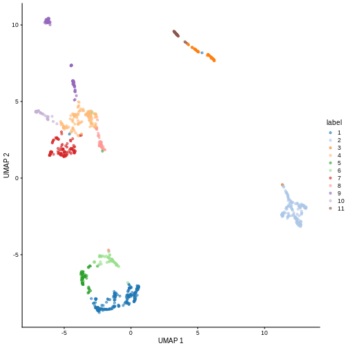
Challenge
Our clusters look semi-reasonable, but what if we wanted to make them
less granular? Look at the help documentation for
?clusterGraph.se and ?buildSnnGraph to find
out what we’d need to change to get fewer, larger clusters.
We see in the help documentation for ?clusterGraph.se an
argument called num.neighbors. Each type of clustering
algorithm will have some sort of hyper-parameter that controls the
granularity of the output clusters. If the clustering process has to
connect larger sets of neighbors, the graph will tend to be cut into
larger groups, resulting in less granular clusters. Create a new set of
clusters with k = 30. Given their visual differences, do
you think one set of clusters is “right” and the other is “wrong”?
R
sce <- clusterGraph.se(sce, num.neighbors = 30,
output.name = "clust2")
plotReducedDim(sce, "UMAP", color_by = "clust2")
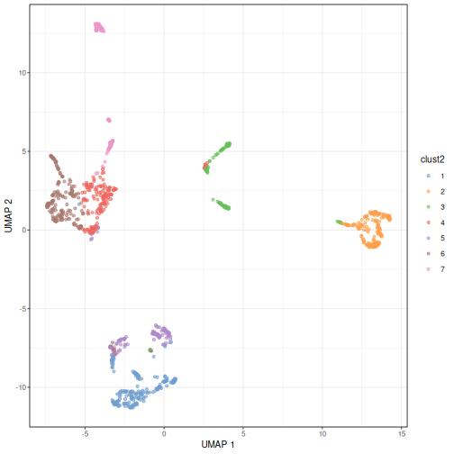
Marker gene detection
To interpret clustering results as obtained in the previous section, we identify the genes that drive separation between clusters. These marker genes allow us to assign biological meaning to each cluster based on their functional annotation. In the simplest case, we have a priori knowledge of the marker genes associated with particular cell types, allowing us to treat the clustering as a proxy for cell type identity.
The most straightforward approach to marker gene detection involves testing for differential expression between clusters. If a gene is strongly DE between clusters, it is likely to have driven the separation of cells in the clustering algorithm.
Here, we use scoreMarkers() to perform pairwise
comparisons of gene expression, focusing on up-regulated (positive)
markers in one cluster when compared to another cluster.
R
rownames(sce) <- rowData(sce)$SYMBOL
markers <- scoreMarkers.se(sce, groups = sce$clusters)
markers
OUTPUT
List of length 14
names(14): 1 2 3 4 5 6 7 8 9 10 11 12 13 14The resulting object contains a sorted marker gene list for each cluster, in which the top genes are those that contribute the most to the separation of that cluster from all other clusters.
Here, we inspect the ranked marker gene list for the first cluster.
R
head(markers[[1]], 3)
OUTPUT
DataFrame with 3 rows and 22 columns
mean detected cohens.d.min cohens.d.mean cohens.d.median
<numeric> <numeric> <numeric> <numeric> <numeric>
Ptn 5.18941 1.000000 0.4135944 3.39489 3.68598
Sox2 2.93998 0.972222 0.6191891 3.33378 3.92825
Sfrp1 3.02850 0.953704 -0.0370316 2.02099 2.10181
cohens.d.max cohens.d.min.rank auc.min auc.mean auc.median auc.max
<numeric> <integer> <numeric> <numeric> <numeric> <numeric>
Ptn 5.92151 1 0.607339 0.926049 0.989583 1.000000
Sox2 4.53758 1 0.678819 0.918697 0.980176 0.986111
Sfrp1 3.83032 2 0.490379 0.850266 0.926881 0.974994
auc.min.rank delta.mean.min delta.mean.mean delta.mean.median
<integer> <numeric> <numeric> <numeric>
Ptn 1 0.438100 3.42700 3.76778
Sox2 1 0.664106 2.38613 2.79828
Sfrp1 2 -0.042077 1.87168 2.06497
delta.mean.max delta.mean.min.rank delta.detected.min delta.detected.mean
<numeric> <integer> <numeric> <numeric>
Ptn 4.98641 1 0.000000000 0.372927
Sox2 2.93998 1 0.083333333 0.708979
Sfrp1 2.96871 2 0.000578704 0.407483
delta.detected.median delta.detected.max delta.detected.min.rank
<numeric> <numeric> <integer>
Ptn 0.256410 0.790123 2
Sox2 0.868774 0.972222 1
Sfrp1 0.318783 0.893098 2Each column contains summary statistics for each gene in the given
cluster. These are usually the mean/median/min/max of statistics like
Cohen’s d and AUC when comparing this cluster (cluster 1 in
this case) to all other clusters. auc.mean is usually the
most important to check. AUC is the probability that a randomly selected
cell in cluster A has a greater expression of gene X
than a randomly selected cell in cluster B.
We can then inspect the top marker genes for the first cluster using
the plotExpression function from the scater package.
R
c1_markers <- markers[[1]]
ord <- order(-c1_markers$auc.mean)
top.markers <- head(rownames(c1_markers[ord,]))
plotExpression(sce,
features = top.markers,
x = "clusters",
color_by = "clusters")
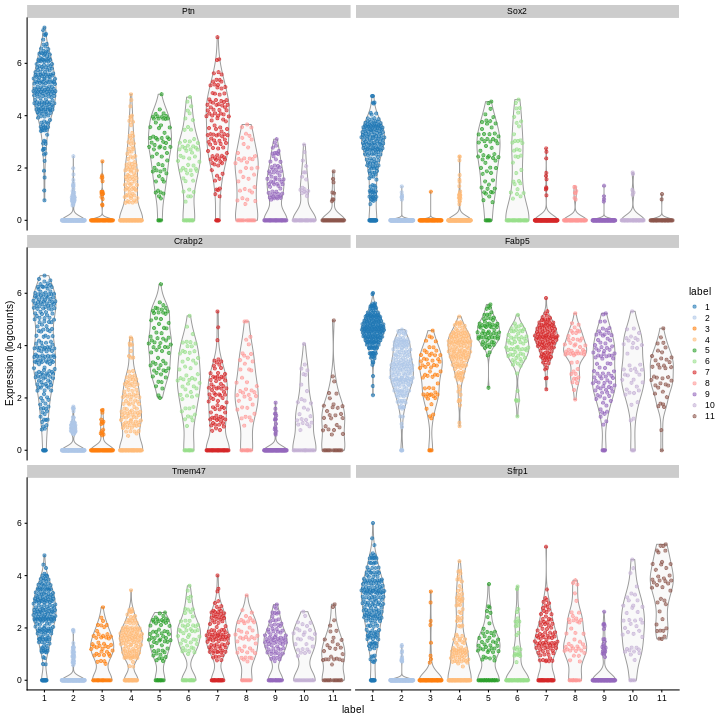
Clearly, not every marker gene distinguishes cluster 1 from every other cluster. However, with a combination of multiple marker genes it’s possible to clearly identify gene patterns that are unique to cluster 1. It’s sort of like the 20 questions game - with answers to the right questions about a cell (e.g. “Do you highly express Ptn? Sox2?”), you can clearly identify what cluster it falls in.
Challenge
Looking at the last plot, what clusters are most difficult to distinguish from cluster 1? Now re-run the UMAP plot from the previous section. Do the difficult-to-distinguish clusters make sense?
You can see that at least among the top markers, cluster 9 (purple) tends to have the least separation from cluster 1.
R
plotReducedDim(sce, "UMAP", color_by = "clusters")

Looking at the UMAP again, we can see that the marker gene overlap of clusters 1 and 6 makes sense. They’re right next to each other on the UMAP. They’re probably closely related cell types, and a less granular clustering would probably lump them together.
Cell type annotation
The most challenging task in scRNA-seq data analysis is arguably the interpretation of the results. Obtaining clusters of cells is fairly straightforward, but it is more difficult to determine what biological state is represented by each of those clusters. Doing so requires us to bridge the gap between the current dataset and prior biological knowledge, and the latter is not always available in a consistent and quantitative manner. Indeed, even the concept of a “cell type” is not clearly defined, with most practitioners possessing a “I’ll know it when I see it” intuition that is not amenable to computational analysis. As such, interpretation of scRNA-seq data is often manual and a common bottleneck in the analysis workflow.
To expedite this step, we can use various computational approaches that exploit prior information to assign meaning to an uncharacterized scRNA-seq dataset. The most obvious sources of prior information are the curated gene sets associated with particular biological processes, e.g., from the Gene Ontology (GO) or the Kyoto Encyclopedia of Genes and Genomes (KEGG) collections. Alternatively, we can directly compare our expression profiles to published reference datasets where each sample or cell has already been annotated with its putative biological state by domain experts. Here, we will demonstrate both approaches on the wild-type chimera dataset.
Assigning cell labels from reference data
A conceptually straightforward annotation approach is to compare the single-cell expression profiles with previously annotated reference datasets. Labels can then be assigned to each cell in our uncharacterized test dataset based on the most similar reference sample(s), for some definition of “similar”. This is a standard classification challenge that can be tackled by standard machine learning techniques such as random forests and support vector machines. Any published and labelled RNA-seq dataset (bulk or single-cell) can be used as a reference, though its reliability depends greatly on the expertise of the original authors who assigned the labels in the first place.
In this section, we will demonstrate the use of the SingleR method for cell type annotation Aran et al., 2019. This method assigns labels to cells based on the reference samples with the highest Spearman rank correlations, using only the marker genes between pairs of labels to focus on the relevant differences between cell types. It also performs a fine-tuning step for each cell where the correlations are recomputed with just the marker genes for the top-scoring labels. This aims to resolve any ambiguity between those labels by removing noise from irrelevant markers for other labels. Further details can be found in the SingleR book from which most of the examples here are derived.
Remember, the quality of reference-based cell type annotation can only be as good as the cell type assignments in the reference. Garbage in, garbage out. In practice, it’s worthwhile to spend time carefully assessing the quality of your reference dataset to make sure the original assignments are valid and are compatible with the query dataset you intend to annotate.
Here we take a single sample from EmbryoAtlasData as our
reference dataset. In practice you would want to take more/all samples,
possibly with batch-effect correction (see the multi-sample
analysis episode).
R
ref <- EmbryoAtlasData(samples = 29)
R
ref
OUTPUT
class: SingleCellExperiment
dim: 29452 7569
metadata(0):
assays(1): counts
rownames(29452): ENSMUSG00000051951 ENSMUSG00000089699 ...
ENSMUSG00000096730 ENSMUSG00000095742
rowData names(2): ENSEMBL SYMBOL
colnames(7569): cell_95727 cell_95728 ... cell_103294 cell_103295
colData names(17): cell barcode ... colour sizeFactor
reducedDimNames(2): pca.corrected umap
mainExpName: NULL
altExpNames(0):In order to reduce the computational load, we subsample the dataset to 2,000 cells.
R
set.seed(123)
ind <- sample(ncol(ref), 2000)
ref <- ref[,ind]
You can see we have an assortment of different cell types in the reference (with varying frequency):
R
tab <- sort(table(ref$celltype), decreasing = TRUE)
data.frame(tab)
OUTPUT
Var1 Freq
1 Forebrain/Midbrain/Hindbrain 282
2 Erythroid3 140
3 Paraxial mesoderm 133
4 ExE mesoderm 97
5 NMP 96
6 Surface ectoderm 92
7 Pharyngeal mesoderm 89
8 ExE endoderm 83
9 Mesenchyme 83
10 Allantois 82
11 Spinal cord 82
12 Cardiomyocytes 74
13 Gut 62
14 Somitic mesoderm 59
15 Neural crest 57
16 Haematoendothelial progenitors 56
17 Intermediate mesoderm 48
18 Endothelium 44
19 Erythroid2 20
20 Blood progenitors 2 6
21 Erythroid1 5
22 Blood progenitors 1 4
23 Def. endoderm 4
24 Caudal Mesoderm 3
25 PGC 3We need the normalized log counts, so we add those on:
R
ref <- normalizeRnaCounts.se(ref)
Some cleaning - remove cells of the reference dataset for which the cell type annotation is missing:
R
nna <- !is.na(ref$celltype)
ref <- ref[,nna]
Also remove very rare cell types (fewer than 10 examples) to avoid allocating cells to a poorly characterized type.
R
abu.ct <- names(tab)[tab >= 10]
ind <- ref$celltype %in% abu.ct
ref <- ref[,ind]
Restrict to genes shared between query and reference dataset.
R
rownames(ref) <- rowData(ref)$SYMBOL
shared_genes <- intersect(rownames(sce), rownames(ref))
sce <- sce[shared_genes,]
ref <- ref[shared_genes,]
Convert sparse assay matrices to regular dense matrices for input to SingleR:
R
sce.mat <- as.matrix(assay(sce, "logcounts"))
ref.mat <- as.matrix(assay(ref, "logcounts"))
Finally, run SingleR with the query and reference datasets:
R
res <- SingleR(test = sce.mat,
ref = ref.mat,
labels = ref$celltype)
res
OUTPUT
DataFrame with 1000 rows and 4 columns
scores labels delta.next
<matrix> <character> <numeric>
cell_11995 0.344089:0.352252:0.322687:... Forebrain/Midbrain/H.. 0.0714460
cell_10294 0.284061:0.269633:0.305867:... Erythroid3 0.0927442
cell_9963 0.344064:0.308871:0.496652:... Endothelium 0.2402474
cell_11610 0.287595:0.274519:0.302783:... Erythroid3 0.0446964
cell_10910 0.418575:0.355947:0.360681:... ExE mesoderm 0.0551009
... ... ... ...
cell_11597 0.326458:0.301278:0.302239:... NMP 0.1670511
cell_9807 0.472615:0.388327:0.400081:... Mesenchyme 0.0715311
cell_10095 0.356238:0.294831:0.497544:... Endothelium 0.0823898
cell_11706 0.271516:0.243037:0.282809:... Erythroid2 0.0730011
cell_11860 0.356413:0.348997:0.339735:... Surface ectoderm 0.0059137
pruned.labels
<character>
cell_11995 Forebrain/Midbrain/H..
cell_10294 Erythroid3
cell_9963 Endothelium
cell_11610 Erythroid3
cell_10910 ExE mesoderm
... ...
cell_11597 NMP
cell_9807 Mesenchyme
cell_10095 Endothelium
cell_11706 NA
cell_11860 Surface ectodermWe inspect the results using a heatmap of the per-cell and label scores. Ideally, each cell should exhibit a high score in one label relative to all of the others, indicating that the assignment to that label was unambiguous.
R
plotScoreHeatmap(res)
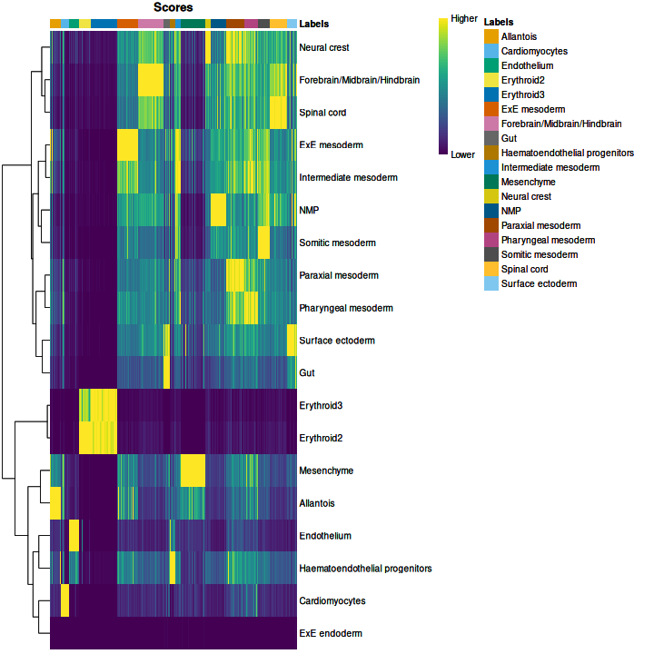
We obtained fairly unambiguous predictions for mesenchyme and endothelial cells, whereas we see expectedly more ambiguity between the two erythroid cell populations.
We can also compare the cell type assignments with the unsupervised clustering results to determine the identity of each cluster. Here, several cell type classes are nested within the same cluster, indicating that these clusters are composed of several transcriptomically similar cell populations. On the other hand, there are also instances where we have several clusters for the same cell type, indicating that the clustering represents finer subdivisions within these cell types.
R
tab <- table(anno = res$pruned.labels,
cluster = sce$clusters)
pheatmap(log1p(tab),
color = hcl.colors(100))
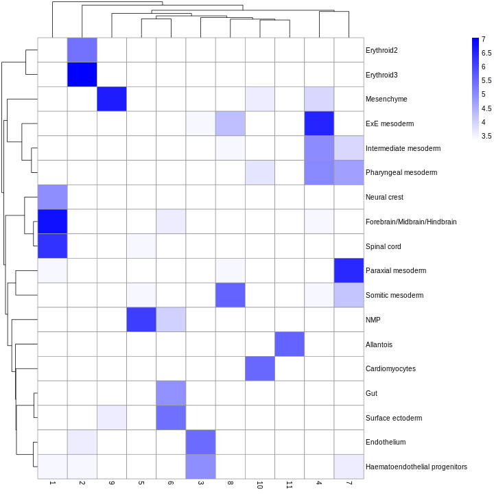
As it so happens, we are in the fortunate position where our test dataset also contains independently defined labels. We see strong consistency between the two sets of labels, indicating that our automatic annotation is comparable to that generated manually by domain experts.
R
tab <- table(res$pruned.labels, sce$celltype.mapped)
pheatmap(log1p(tab),
color = hcl.colors(100))
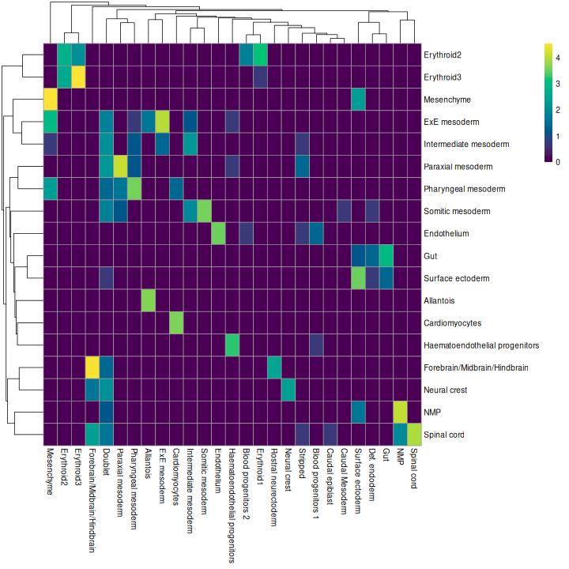
Challenge
Assign the SingleR annotations as a column in the colData for the
query object sce.
R
sce$SingleR_label = res$pruned.labels
Assigning cell labels from marker gene sets
A related strategy is to explicitly identify sets of marker genes that are highly expressed in each individual cell. This does not require matching of individual cells to the expression values of the reference dataset, which is faster and more convenient when only the identities of the markers are available.
It’s common to use expert-curated lists of marker genes derived from the literature and/or experimental experience. However for the sake of demonstration, in this case we’ll use cell type markers derived empirically from the mouse embryo atlas dataset.
R
mrkrs <- scoreMarkers.se(ref, groups = ref$celltype)
This gives a list of marker statistics for each cell type. Let’s look at the Erythroid3 markers:
R
mrkrs[["Erythroid3"]][,c("mean", "auc.mean")]
OUTPUT
DataFrame with 29411 rows and 2 columns
mean auc.mean
<numeric> <numeric>
Hbb-bh1 10.37685 0.995020
Hba-a1 8.83379 0.998492
Hba-x 9.72428 0.997738
Hba-a2 7.67391 0.997996
Blvrb 4.55019 0.985159
... ... ...
Tceal9 1.355498 0.0312212
Tuba1a 0.521599 0.0587563
Tmsb10 2.274679 0.0526069
Marcksl1 1.196010 0.0377824
Serpinh1 0.240562 0.0327936The full table gives a large list of statistics for each gene describing how well distinguishes Erythroid3 cells from other cell types. The two selected here, mean expression and mean AUC, are important statistics to look at. They help you check that the gene is highly expressed in the cell type and can consistently discriminate the selected type from the others, respectively.
Our test dataset will be as before the wild-type chimera dataset.
R
sce
OUTPUT
class: SingleCellExperiment
dim: 29411 1000
metadata(1): PCA
assays(2): counts logcounts
rownames(29411): Xkr4 Gm1992 ... Vmn2r122 CAAA01147332.1
rowData names(7): ENSEMBL SYMBOL ... residuals hvg
colnames(1000): cell_11995 cell_10294 ... cell_11706 cell_11860
colData names(14): cell barcode ... clust2 SingleR_label
reducedDimNames(4): pca.corrected.E7.5 pca.corrected.E8.5 PCA UMAP
mainExpName: NULL
altExpNames(0):We use the AUCell package to identify marker sets that are highly expressed in each cell. This method ranks genes by their expression values within each cell and constructs a response curve of the number of genes from each marker set that are present with increasing rank. It then computes the area under the curve (AUC) for each marker set, quantifying the enrichment of those markers among the most highly expressed genes in that cell. This is roughly similar to performing a Wilcoxon rank sum test between genes in and outside of the set, but involving only the top ranking genes by expression in each cell.
R
get_top_n <- function(mrk_df, ntop = 100) {
o = order(mrk_df$auc.median, decreasing = TRUE)
rownames(mrk_df[head(o, ntop),])
}
all.sets <- lapply(names(mrkrs),
function(x) {
GeneSet(get_top_n(mrkrs[[x]]), setName = x)
})
all.sets <- GeneSetCollection(all.sets)
all.sets
OUTPUT
GeneSetCollection
names: Allantois, Cardiomyocytes, ..., Surface ectoderm (19 total)
unique identifiers: Phlda2, Spin2c, ..., Sostdc1 (976 total)
types in collection:
geneIdType: NullIdentifier (1 total)
collectionType: NullCollection (1 total)R
rankings <- AUCell_buildRankings(as.matrix(counts(sce)),
plotStats = FALSE, verbose = FALSE)
cell.aucs <- AUCell_calcAUC(all.sets, rankings)
results <- t(assay(cell.aucs))
head(results, 3)
OUTPUT
gene sets
cells Allantois Cardiomyocytes Endothelium Erythroid2 Erythroid3
cell_11995 0.0984 0.1062 0.129 0.211 0.145
cell_10294 0.0970 0.0892 0.113 0.584 0.563
cell_9963 0.2533 0.1502 0.506 0.191 0.158
gene sets
cells ExE endoderm ExE mesoderm Forebrain/Midbrain/Hindbrain Gut
cell_11995 0.0815 0.184 0.491 0.175
cell_10294 0.1218 0.117 0.343 0.166
cell_9963 0.1083 0.180 0.366 0.208
gene sets
cells Haematoendothelial progenitors Intermediate mesoderm Mesenchyme
cell_11995 0.148 0.249 0.157
cell_10294 0.138 0.212 0.118
cell_9963 0.463 0.229 0.363
gene sets
cells Neural crest NMP Paraxial mesoderm Pharyngeal mesoderm
cell_11995 0.441 0.365 0.315 0.345
cell_10294 0.374 0.272 0.212 0.232
cell_9963 0.369 0.295 0.373 0.335
gene sets
cells Somitic mesoderm Spinal cord Surface ectoderm
cell_11995 0.311 0.475 0.159
cell_10294 0.209 0.320 0.110
cell_9963 0.301 0.337 0.133We assign cell type identity to each cell in the test dataset by taking the marker set with the top AUC as the label for that cell. Our new labels mostly agree with the original annotation (and, thus, also with the reference-based annotation). Instances where the original annotation is divided into several new label groups typically points to large overlaps in their marker sets. In the absence of prior annotation, a more general diagnostic check is to compare the assigned labels to cluster identities, under the expectation that most cells of a single cluster would have the same label (or, if multiple labels are present, they should at least represent closely related cell states). We only print out the top-left corner of the table here, but you should try looking at the whole thing:
R
new.labels <- colnames(results)[max.col(results)]
tab <- table(new.labels, sce$celltype.mapped)
tab[1:4,1:4]
OUTPUT
new.labels Allantois Blood progenitors 1 Blood progenitors 2
Allantois 34 0 0
Cardiomyocytes 0 0 0
Endothelium 0 0 0
Erythroid2 0 0 3
new.labels Cardiomyocytes
Allantois 0
Cardiomyocytes 27
Endothelium 0
Erythroid2 0As a diagnostic measure, we examine the distribution of AUCs across cells for each label. In heterogeneous populations, the distribution for each label should be bimodal with one high-scoring peak containing cells of that cell type and a low-scoring peak containing cells of other types. The gap between these two peaks can be used to derive a threshold for whether a label is “active” for a particular cell. (In this case, we simply take the single highest-scoring label per cell as the labels should be mutually exclusive.) In populations where a particular cell type is expected, lack of clear bimodality for the corresponding label may indicate that its gene set is not sufficiently informative.
R
par(mfrow = c(3,3))
AUCell_exploreThresholds(cell.aucs[1:9], plotHist = TRUE, assign = TRUE)
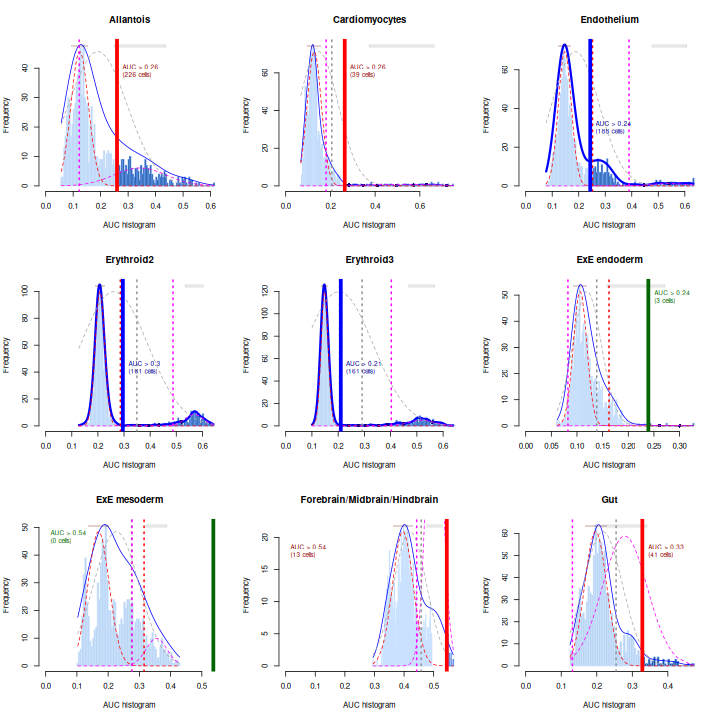
Shown is the distribution of AUCs in the wild-type chimera dataset for each label in the embryo atlas dataset. The blue curve represents the density estimate, the red curve represents a fitted two-component mixture of normals, the pink curve represents a fitted three-component mixture, and the grey curve represents a fitted normal distribution. Vertical lines represent threshold estimates corresponding to each estimate of the distribution.
Challenge
Inspect the diagnostics for the next nine cell types. Do they look okay?
R
par(mfrow = c(3,3))
AUCell_exploreThresholds(cell.aucs[10:18], plotHist = TRUE, assign = TRUE)
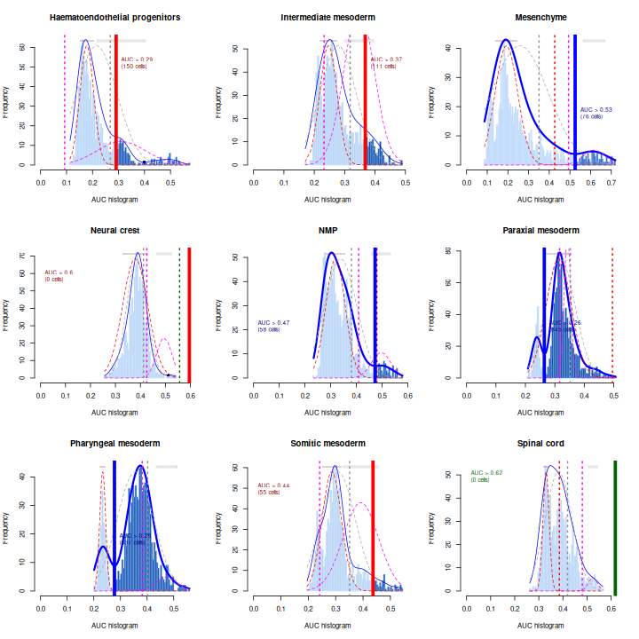
Exercises
Exercise 1: Clustering
The Leiden
algorithm is similar to the Louvain algorithm, but it is faster and
has been shown to result in better connected communities. Modify the
above call to clusterCells to carry out the community
detection with the Leiden algorithm instead. Visualize the results in a
UMAP plot.
The NNGraphParam constructor has an argument
cluster.args. This allows to specify arguments passed on to
the cluster_leiden function from the igraph
package. Use the cluster.args argument to parameterize the
clustering to use modularity as the objective function and a resolution
parameter of 0.5.
R
arg_list <- list(objective_function = "modularity",
resolution_parameter = .5)
sce$leiden_clust <- clusterCells(sce, use.dimred = "PCA",
BLUSPARAM = NNGraphParam(cluster.fun = "leiden",
cluster.args = arg_list))
ERROR
Error in `clusterCells()`:
! could not find function "clusterCells"R
plotReducedDim(sce, "UMAP", color_by = "leiden_clust")
ERROR
Error in `retrieveCellInfo()`:
! cannot find 'leiden_clust'Exercise 2: Reference marker genes
Identify the marker genes in the reference single cell experiment,
using the celltype labels that come with the dataset as the
groups. Compare the top 100 marker genes of two cell types that are
close in UMAP space. Do they share similar marker sets?
R
markers <- scoreMarkers(ref, groups = ref$celltype)
ERROR
Error in `.checkSEX()`:
! SummarizedExperiment inputs are not supported, use 'scoreMarkers.se()' or extract the relevant 'assay()' insteadR
markers
OUTPUT
List of length 14
names(14): 1 2 3 4 5 6 7 8 9 10 11 12 13 14R
# It comes with UMAP precomputed too
plotReducedDim(ref, dimred = "umap", color_by = "celltype")
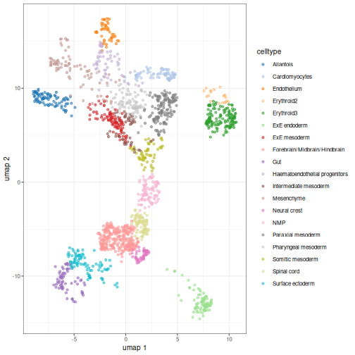
R
# Repetitive work -> write a function
order_marker_df <- function(m_df, n = 100) {
ord <- order(m_df$mean.AUC, decreasing = TRUE)
rownames(m_df[ord,][1:n,])
}
x <- order_marker_df(markers[["Erythroid2"]])
ERROR
Error in `order()`:
! argument 1 is not a vectorR
y <- order_marker_df(markers[["Erythroid3"]])
ERROR
Error in `order()`:
! argument 1 is not a vectorR
length(intersect(x,y)) / 100
ERROR
Error in `h()`:
! error in evaluating the argument 'x' in selecting a method for function 'intersect': object 'x' not foundTurns out there’s pretty substantial overlap between
Erythroid2 and Erythroid3. It would also be
interesting to plot the expression of the set difference to confirm that
the remainder are the the genes used to distinguish these two types from
each other.
Extension Challenge 1: Group pair comparisons
Why do you think marker genes are found by aggregating pairwise comparisons rather than iteratively comparing each cluster to all other clusters?
One important reason why is because averages over all other clusters can be sensitive to the cell type composition. If a rare cell type shows up in one sample, the most discriminative marker genes found in this way could be very different from those found in another sample where the rare cell type is absent.
Generally, it’s good to keep in mind that the concept of “everything else” is not a stable basis for comparison. Read that sentence again, because its a subtle but broadly applicable point. Think about it and you can probably identify analogous issues in fields outside of single-cell analysis. It frequently comes up when comparisons between multiple categories are involved.
Extension Challenge 2: Parallelizing SingleR
SingleR can be computationally expensive. How do you set it to run in parallel?
Use BiocParallel and the BPPARAM argument!
This example will set it to use four cores on your laptop, but you can
also configure BiocParallel to use cluster jobs.
R
library(BiocParallel)
my_bpparam <- MulticoreParam(workers = 4)
res2 <- SingleR(test = sce.mat,
ref = ref.mat,
labels = ref$celltype,
BPPARAM = my_bpparam)
BiocParallel is the most common way to enable parallel
computation in Bioconductor packages, so you can expect to see it
elsewhere outside of SingleR.
Extension Challenge 3: Critical inspection of diagnostics
The first set of AUCell diagnostics don’t look so good for some of the examples here. Which ones? Why?
The example that jumps out most strongly to the eye is ExE endoderm, which doesn’t show clear separate modes. Simultaneously, Endothelium seems to have three or four modes.
Remember, this is an exploratory diagnostic, not the final word! At this point it’d be good to engage in some critical inspection of the results. Maybe we don’t have enough / the best marker genes. In this particular case, the fact that we subsetted the reference set to 1000 cells probably didn’t help.
Further Reading
- OSCA book, Chapters 5-7
- Assigning cell types with SingleR (the book).
- The AUCell package vignette.
- The two main approaches for cell type annotation are 1) manual annotation of clusters based on marker gene expression, and 2) computational annotation based on annotation transfer from reference datasets or marker gene set enrichment testing.
- For manual annotation, cells are first clustered with unsupervised methods such as graph-based clustering followed by community detection algorithms such as Louvain or Leiden.
- The
clusterGraph.se()function from the scrapper package enables graph clustering for scRNA-seq data. - Once clusters have been obtained, cell type labels are then manually assigned to cell clusters by matching cluster-specific upregulated marker genes with prior knowledge of cell-type markers.
- The
scoreMarkers.se()function from the scrapper package package can be used to find candidate marker genes for clusters of cells by ranking differential expression between pairs of clusters. - Computational annotation using published reference datasets or curated gene sets provides a fast, automated, and reproducible alternative to the manual annotation of cell clusters based on marker gene expression.
- The SingleR package is a popular choice for reference-based annotation and assigns labels to cells based on the reference samples with the highest Spearman rank correlations.
- The AUCell package provides an enrichment test to identify curated marker sets that are highly expressed in each cell.
Session Info
R
sessionInfo()
OUTPUT
R version 4.6.1 (2026-06-24)
Platform: x86_64-pc-linux-gnu
Running under: Ubuntu 24.04.4 LTS
Matrix products: default
BLAS: /usr/lib/x86_64-linux-gnu/openblas-pthread/libblas.so.3
LAPACK: /usr/lib/x86_64-linux-gnu/openblas-pthread/libopenblasp-r0.3.26.so; LAPACK version 3.12.0
locale:
[1] LC_CTYPE=en_US.UTF-8 LC_NUMERIC=C
[3] LC_TIME=en_US.UTF-8 LC_COLLATE=en_US.UTF-8
[5] LC_MONETARY=en_US.UTF-8 LC_MESSAGES=en_US.UTF-8
[7] LC_PAPER=en_US.UTF-8 LC_NAME=C
[9] LC_ADDRESS=C LC_TELEPHONE=C
[11] LC_MEASUREMENT=en_US.UTF-8 LC_IDENTIFICATION=C
time zone: Etc/UTC
tzcode source: system (glibc)
attached base packages:
[1] stats4 stats graphics grDevices utils datasets methods
[8] base
other attached packages:
[1] GSEABase_1.74.0 graph_1.90.0
[3] annotate_1.90.0 XML_3.99-0.23
[5] AnnotationDbi_1.74.0 pheatmap_1.0.13
[7] scrapper_1.6.3 scater_1.40.2
[9] ggplot2_4.0.3 scuttle_1.22.0
[11] bluster_1.22.0 SingleR_2.14.1
[13] MouseGastrulationData_1.26.0 SpatialExperiment_1.22.0
[15] SingleCellExperiment_1.34.0 SummarizedExperiment_1.42.0
[17] Biobase_2.72.0 GenomicRanges_1.64.0
[19] Seqinfo_1.2.0 IRanges_2.46.0
[21] S4Vectors_0.50.1 BiocGenerics_0.58.1
[23] generics_0.1.4 MatrixGenerics_1.24.0
[25] matrixStats_1.5.0 AUCell_1.34.0
[27] BiocStyle_2.40.0
loaded via a namespace (and not attached):
[1] RColorBrewer_1.1-3 jsonlite_2.0.0
[3] magrittr_2.0.5 ggbeeswarm_0.7.3
[5] magick_2.9.1 farver_2.1.2
[7] rmarkdown_2.31 vctrs_0.7.3
[9] memoise_2.0.1 DelayedMatrixStats_1.34.0
[11] htmltools_0.5.9 S4Arrays_1.12.0
[13] AnnotationHub_4.2.2 curl_7.1.0
[15] BiocNeighbors_2.6.0 SparseArray_1.12.2
[17] htmlwidgets_1.6.4 httr2_1.3.0
[19] plotly_4.12.1 cachem_1.1.0
[21] igraph_2.3.3 lifecycle_1.0.5
[23] pkgconfig_2.0.3 rsvd_1.0.5
[25] Matrix_1.7-6 R6_2.6.1
[27] fastmap_1.2.0 digest_0.6.39
[29] irlba_2.3.7 ExperimentHub_3.2.0
[31] RSQLite_3.53.3 beachmat_2.28.0
[33] filelock_1.0.3 labeling_0.4.3
[35] httr_1.4.8 abind_1.4-8
[37] compiler_4.6.1 bit64_4.8.2
[39] withr_3.0.3 S7_0.2.2
[41] BiocParallel_1.46.0 viridis_0.6.5
[43] DBI_1.3.0 R.utils_2.13.0
[45] MASS_7.3-66 rappdirs_0.3.4
[47] DelayedArray_0.38.2 rjson_0.2.23
[49] tools_4.6.1 vipor_0.4.7
[51] otel_0.2.0 beeswarm_0.4.0
[53] R.oo_1.27.1 glue_1.8.1
[55] nlme_3.1-170 grid_4.6.1
[57] cluster_2.1.8.3 gtable_0.3.6
[59] R.methodsS3_1.8.2 tidyr_1.3.2
[61] data.table_1.18.4 BiocSingular_1.28.0
[63] ScaledMatrix_1.20.0 XVector_0.52.0
[65] ggrepel_0.9.8 BiocVersion_3.23.1
[67] pillar_1.11.1 BumpyMatrix_1.20.0
[69] splines_4.6.1 dplyr_1.2.1
[71] BiocFileCache_3.2.0 lattice_0.22-9
[73] renv_1.2.4 survival_3.8-9
[75] bit_4.6.0 tidyselect_1.2.1
[77] Biostrings_2.80.1 knitr_1.51
[79] gridExtra_2.3.1 xfun_0.60
[81] mixtools_2.0.0.1 yaml_2.3.12
[83] evaluate_1.0.5 codetools_0.2-20
[85] kernlab_0.9-33 tibble_3.3.1
[87] BiocManager_1.30.27 cli_3.6.6
[89] xtable_1.8-8 segmented_2.2-1
[91] Rcpp_1.1.2 dbplyr_2.6.0
[93] png_0.1-9 parallel_4.6.1
[95] blob_1.3.0 sparseMatrixStats_1.24.0
[97] viridisLite_0.4.3 scales_1.4.0
[99] purrr_1.2.2 crayon_1.5.3
[101] rlang_1.3.0 formatR_1.14
[103] KEGGREST_1.52.2 Content from Multi-sample analyses
Last updated on 2026-09-01 | Edit this page
Overview
Questions
- How can we integrate data from multiple batches, samples, and studies?
- How can we identify differentially expressed genes between experimental conditions for each cell type?
- How can we identify changes in cell type abundance between experimental conditions?
Objectives
- Correct batch effects and diagnose potential problems such as over-correction.
- Perform differential expression comparisons between conditions based on pseudo-bulk samples.
- Perform differential abundance comparisons between conditions.
Setup and data exploration
As before, we will use the the wild-type data from the Tal1 chimera experiment:
- Sample 5: E8.5 injected cells (tomato positive), pool 3
- Sample 6: E8.5 host cells (tomato negative), pool 3
- Sample 7: E8.5 injected cells (tomato positive), pool 4
- Sample 8: E8.5 host cells (tomato negative), pool 4
- Sample 9: E8.5 injected cells (tomato positive), pool 5
- Sample 10: E8.5 host cells (tomato negative), pool 5
Note that this is a paired design in which for each biological replicate (pool 3, 4, and 5), we have both host and injected cells.
We start by loading the data and doing a quick exploratory analysis,
essentially applying the normalization and visualization techniques that
we have seen in the previous lectures to all samples. Note that this
time we’re selecting samples 5 to 10, not just 5 by itself. Also note
the type = "processed" argument: we are explicitly
selecting the version of the data that has already been QC
processed.
R
library(MouseGastrulationData)
library(edgeR)
library(scater)
library(ggplot2)
library(scrapper)
library(pheatmap)
sce <- WTChimeraData(samples = 5:10, type = "processed")
R
sce
OUTPUT
class: SingleCellExperiment
dim: 29453 20935
metadata(0):
assays(1): counts
rownames(29453): ENSMUSG00000051951 ENSMUSG00000089699 ...
ENSMUSG00000095742 tomato-td
rowData names(2): ENSEMBL SYMBOL
colnames(20935): cell_9769 cell_9770 ... cell_30702 cell_30703
colData names(11): cell barcode ... doub.density sizeFactor
reducedDimNames(2): pca.corrected.E7.5 pca.corrected.E8.5
mainExpName: NULL
altExpNames(0):R
colData(sce)
OUTPUT
DataFrame with 20935 rows and 11 columns
cell barcode sample stage tomato
<character> <character> <integer> <character> <logical>
cell_9769 cell_9769 AAACCTGAGACTGTAA 5 E8.5 TRUE
cell_9770 cell_9770 AAACCTGAGATGCCTT 5 E8.5 TRUE
cell_9771 cell_9771 AAACCTGAGCAGCCTC 5 E8.5 TRUE
cell_9772 cell_9772 AAACCTGCATACTCTT 5 E8.5 TRUE
cell_9773 cell_9773 AAACGGGTCAACACCA 5 E8.5 TRUE
... ... ... ... ... ...
cell_30699 cell_30699 TTTGTCACAGCTCGCA 10 E8.5 FALSE
cell_30700 cell_30700 TTTGTCAGTCTAGTCA 10 E8.5 FALSE
cell_30701 cell_30701 TTTGTCATCATCGGAT 10 E8.5 FALSE
cell_30702 cell_30702 TTTGTCATCATTATCC 10 E8.5 FALSE
cell_30703 cell_30703 TTTGTCATCCCATTTA 10 E8.5 FALSE
pool stage.mapped celltype.mapped closest.cell
<integer> <character> <character> <character>
cell_9769 3 E8.25 Mesenchyme cell_24159
cell_9770 3 E8.5 Endothelium cell_96660
cell_9771 3 E8.5 Allantois cell_134982
cell_9772 3 E8.5 Erythroid3 cell_133892
cell_9773 3 E8.25 Erythroid1 cell_76296
... ... ... ... ...
cell_30699 5 E8.5 Erythroid3 cell_38810
cell_30700 5 E8.5 Surface ectoderm cell_38588
cell_30701 5 E8.25 Forebrain/Midbrain/H.. cell_66082
cell_30702 5 E8.5 Erythroid3 cell_138114
cell_30703 5 E8.0 Doublet cell_92644
doub.density sizeFactor
<numeric> <numeric>
cell_9769 0.02985045 1.41243
cell_9770 0.00172753 1.22757
cell_9771 0.01338013 1.15439
cell_9772 0.00218402 1.28676
cell_9773 0.00211723 1.78719
... ... ...
cell_30699 0.00146287 0.389311
cell_30700 0.00374155 0.588784
cell_30701 0.05651258 0.624455
cell_30702 0.00108837 0.550807
cell_30703 0.82369305 1.184919For the sake of making these examples run faster, we drop low quality cells (stripped nuclei and doublets) and also randomly select 50% cells per sample.
R
drop <- sce$celltype.mapped %in% c("stripped", "Doublet")
sce <- sce[,!drop]
set.seed(29482)
idx <- unlist(tapply(colnames(sce), sce$sample, function(x) {
perc <- round(0.50 * length(x))
sample(x, perc)
}))
sce <- sce[,idx]
We now normalize the data, run some dimensionality reduction steps,
and visualize the data in a tSNE plot. In this case we have many
different cell types, so we define a custom palette with many visually
distinct colors (adapted from the polychrome palette in the
pals
package).
R
sce <- sce |>
normalizeRnaCounts.se() |>
chooseRnaHvgs.se()
sce <- sce |>
runPca.se(features = rowData(sce)$hvg) |>
runTsne.se()
sce$sample <- as.factor(sce$sample)
plotTSNE(sce, colour_by = "sample")
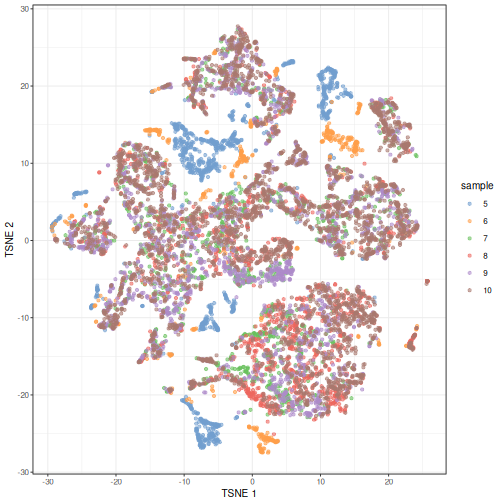
R
color_vec <- c("#5A5156", "#E4E1E3", "#F6222E", "#FE00FA", "#16FF32", "#3283FE",
"#FEAF16", "#B00068", "#1CFFCE", "#90AD1C", "#2ED9FF", "#DEA0FD",
"#AA0DFE", "#F8A19F", "#325A9B", "#C4451C", "#1C8356", "#85660D",
"#B10DA1", "#3B00FB", "#1CBE4F", "#FA0087", "#333333", "#F7E1A0",
"#C075A6", "#782AB6", "#AAF400", "#BDCDFF", "#822E1C", "#B5EFB5",
"#7ED7D1", "#1C7F93", "#D85FF7", "#683B79", "#66B0FF", "#FBE426")
plotTSNE(sce, colour_by = "celltype.mapped") +
scale_color_manual(values = color_vec) +
theme(legend.position = "bottom")
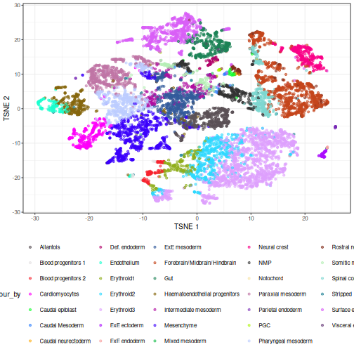
There are evident sample effects. Depending on the analysis that you want to perform you may want to remove or retain the sample effect. For instance, if the goal is to identify cell types with a clustering method, one may want to remove the sample effects with “batch effect” correction methods.
For now, let’s assume that we want to remove this effect.
Challenge
It seems like samples 5 and 6 are clearly separated off the other samples in gene expression space. Given the group of cells in each sample, why might this make sense for these samples as opposed to some other pair of samples? What is the factor presumably leading to this difference?
Samples 5 and 6 were from the same “pool” of cells. Looking at the
documentation for the dataset under ?WTChimeraData we see
that the pool variable is defined as: “Integer, embryo pool from which
cell derived; samples with same value are matched.” So samples 5 and 6
have an experimental factor in common which causes a shared, systematic
difference in their gene expression profiles compared to the other
samples. That’s why you can see many isolated blue/orange clusters on
the first TSNE plot. If you were developing single-cell library
preparation protocols you might want to preserve this effect to
understand how variation in pools leads to variation in expression, but
for now, given that we’re investigating other effects, we’ll want to
remove this as undesired technical variation.
Correcting batch effects
We “correct” the effect of samples with the
correctMnn.se() function in the scrapper
package, using the sample column as the batch variable.
R
set.seed(10102)
merged <- correctMnn.se(sce,
block = sce$sample)
merged <- runTsne.se(merged,
reddim.type = "MNN")
plotTSNE(merged, colour_by = "sample")
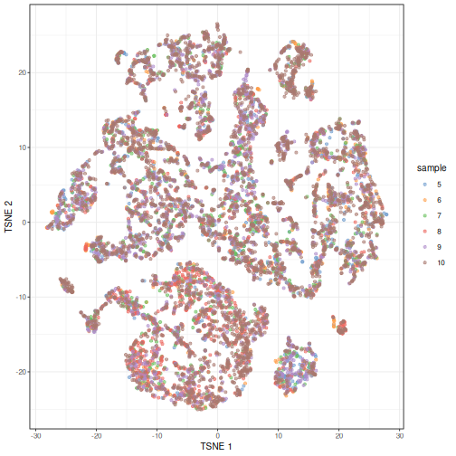
We can also see that when coloring cells by cell type, the cell types are now largely confined to individual clusters:
R
plotTSNE(merged, colour_by = "celltype.mapped") +
scale_color_manual(values = color_vec) +
theme(legend.position = "bottom")
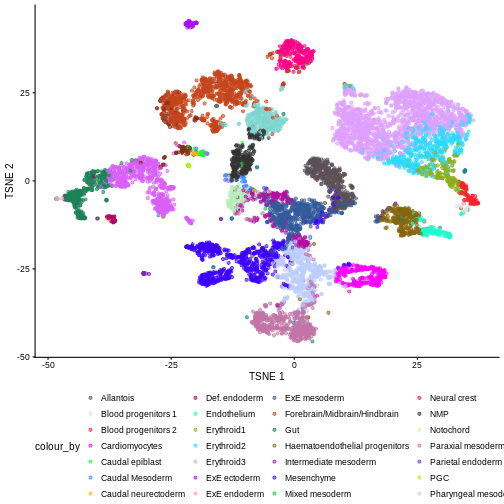
Once we have removed the sample effect, we can proceed with the differential expression (DE) analysis.
Challenge
True or False? After batch correction, no batch-level information is present in the corrected data.
False. Batch-level data can be retained through confounding with experimental factors or poor ability to distinguish experimental effects from batch effects. Remember, the changes needed to correct the data are empirically estimated, so they can carry along error.
While batch effect correction algorithms usually do a pretty good job, it’s smart to do a sanity check for batch effects at the end of your analysis. You always want to make sure that that effect you’re resting your paper submission on isn’t driven by batch effects.
Differential Expression
In order to perform a differential expression (DE) analysis, we need to identify groups of cells across samples/conditions (depending on the experimental design and the overall goal of the experiment).
As we have seen before, there are two ways of grouping cells, cell clustering and cell labeling. Here, we apply the second approach to group cells according to the already annotated cell types to proceed with the computation of the pseudo-bulk samples.
Pseudo-bulk samples
To compute differences between groups of cells, a possible way is to compute pseudo-bulk samples, where we summarize the gene expression for all the cells of each specific cell type. We are then able to detect differences in gene expression between two different conditions for one cell type at a time.
To compute pseudo-bulk samples, we use the
aggregateAcrossCells function in the scrapper
package, which takes as input not only a SingleCellExperiment, but also
the label used for the identification of cell groups/types. Here, we use
not just the cell type label, but also the sample ID, as we want be able
to discern between replicates and conditions later in the analysis.
R
# Using 'label' and 'sample' as our two factors; each column of the output
# corresponds to one unique combination of these two factors.
summed <- aggregateAcrossCells.se(
merged,
factors = colData(merged)[,c("celltype.mapped", "sample")]
)
summed
OUTPUT
class: SummarizedExperiment
dim: 29453 179
metadata(1): aggregated
assays(2): sums detected
rownames(29453): ENSMUSG00000051951 ENSMUSG00000089699 ...
ENSMUSG00000095742 tomato-td
rowData names(7): ENSEMBL SYMBOL ... residuals hvg
colnames: NULL
colData names(14): factor.celltype.mapped factor.sample ...
doub.density sizeFactorDifferential Expression (DE) Analysis
The main advantage of using pseudo-bulk samples is that we can use established methods for bulk DE analysis like edgeR and DESeq2. Both, edgeR and DESeq2, are based on negative binomial models, but differ in their normalization strategies and several implementation details.
First, let’s start with a specific cell type, for instance the
“Mesenchymal stem cells”, and analyze gene expression differences
between conditions for this cell type. We store the counts table in a
DGEList data container called y, along with
experimental metadata.
R
current <- summed[, summed$celltype.mapped == "Mesenchyme"]
y <- DGEList(assay(current, "sums"),
samples = colData(current))
y
OUTPUT
An object of class "DGEList"
$counts
Sample1 Sample2 Sample3 Sample4 Sample5 Sample6
ENSMUSG00000051951 2 0 0 0 1 0
ENSMUSG00000089699 0 0 0 0 0 0
ENSMUSG00000102343 0 0 0 0 0 0
ENSMUSG00000025900 0 0 0 0 0 0
ENSMUSG00000025902 4 0 2 0 3 6
29448 more rows ...
$samples
group lib.size norm.factors factor.celltype.mapped factor.sample counts
Sample1 1 4725467 1 Mesenchyme 5 151
Sample2 1 1033275 1 Mesenchyme 6 28
Sample3 1 2469232 1 Mesenchyme 7 127
Sample4 1 1099828 1 Mesenchyme 8 75
Sample5 1 4122536 1 Mesenchyme 9 239
Sample6 1 1754963 1 Mesenchyme 10 146
cell barcode sample stage tomato pool stage.mapped celltype.mapped
Sample1 <NA> <NA> 5 E8.5 TRUE 3 <NA> Mesenchyme
Sample2 <NA> <NA> 6 E8.5 FALSE 3 <NA> Mesenchyme
Sample3 <NA> <NA> 7 E8.5 TRUE 4 <NA> Mesenchyme
Sample4 <NA> <NA> 8 E8.5 FALSE 4 <NA> Mesenchyme
Sample5 <NA> <NA> 9 E8.5 TRUE 5 <NA> Mesenchyme
Sample6 <NA> <NA> 10 E8.5 FALSE 5 <NA> Mesenchyme
closest.cell doub.density sizeFactor
Sample1 <NA> NA NA
Sample2 <NA> NA NA
Sample3 <NA> NA NA
Sample4 <NA> NA NA
Sample5 <NA> NA NA
Sample6 <NA> NA NAWe usually want to discard low quality samples with low sequencing depth / library size as they have the potential to skew normalization and/or DE analysis.
We can see that in our case we don’t have low quality samples, so there is no need for such a filtering step.
R
discarded <- current$counts < 10
y <- y[,!discarded]
table(discarded)
OUTPUT
discarded
FALSE
6 Typically, we also want to filter out genes with too low of an expression to be meaningfully retained in a statistical analysis for differential expression.
R
keep <- filterByExpr(y, group = current$tomato)
y <- y[keep,]
table(keep)
OUTPUT
keep
FALSE TRUE
20424 9029 We can now proceed with normalizing the data. There are several
approaches for normalizing bulk data, that are thus readily applicable
to pseudo-bulk data. Here, we use the Trimmed Mean of M-values
(TMM) method, implemented in the edgeR package within the
normLibSizes function.
R
y <- normLibSizes(y)
y$samples
OUTPUT
group lib.size norm.factors factor.celltype.mapped factor.sample counts
Sample1 1 4725467 1.0529543 Mesenchyme 5 151
Sample2 1 1033275 1.0383194 Mesenchyme 6 28
Sample3 1 2469232 0.9732758 Mesenchyme 7 127
Sample4 1 1099828 0.9967631 Mesenchyme 8 75
Sample5 1 4122536 0.9613914 Mesenchyme 9 239
Sample6 1 1754963 0.9806892 Mesenchyme 10 146
cell barcode sample stage tomato pool stage.mapped celltype.mapped
Sample1 <NA> <NA> 5 E8.5 TRUE 3 <NA> Mesenchyme
Sample2 <NA> <NA> 6 E8.5 FALSE 3 <NA> Mesenchyme
Sample3 <NA> <NA> 7 E8.5 TRUE 4 <NA> Mesenchyme
Sample4 <NA> <NA> 8 E8.5 FALSE 4 <NA> Mesenchyme
Sample5 <NA> <NA> 9 E8.5 TRUE 5 <NA> Mesenchyme
Sample6 <NA> <NA> 10 E8.5 FALSE 5 <NA> Mesenchyme
closest.cell doub.density sizeFactor
Sample1 <NA> NA NA
Sample2 <NA> NA NA
Sample3 <NA> NA NA
Sample4 <NA> NA NA
Sample5 <NA> NA NA
Sample6 <NA> NA NATo investigate the effect of the normalization, we use a Mean-Difference (MD) plot for each sample in order to detect possible normalization issues due to insufficient cells/reads/UMIs in any of the pseudo-bulk profiles.
In our case, we verify that all these plots are centered on 0 (\(y\)-axis) and display a trumpet shape, as expected.
R
par(mfrow = c(2,3))
for (i in seq_len(ncol(y))) {
plotMD(y, column = i)
}
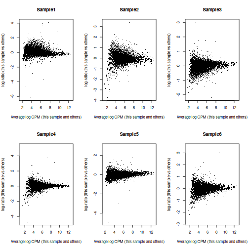
R
par(mfrow = c(1,1))
Furthermore, we want to check if the samples cluster together based on known experimental factors (like the tomato injection in this case).
Here, we use a multidimensional scaling (MDS) plot to inspect this. Multidimensional scaling (also called principal coordinate analysis (PCoA)) is a dimensionality reduction technique that’s conceptually similar to principal component analysis (PCA).
R
limma::plotMDS(cpm(y, log = TRUE),
col = ifelse(y$samples$tomato, "red", "blue"))
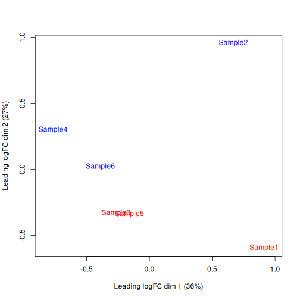
We then construct a design matrix with the tomato variable as the main factors and pool as an additional covariate.
R
design <- model.matrix(~factor(pool) + factor(tomato),
data = y$samples)
design
OUTPUT
(Intercept) factor(pool)4 factor(pool)5 factor(tomato)TRUE
Sample1 1 0 0 1
Sample2 1 0 0 0
Sample3 1 1 0 1
Sample4 1 1 0 0
Sample5 1 0 1 1
Sample6 1 0 1 0
attr(,"assign")
[1] 0 1 1 2
attr(,"contrasts")
attr(,"contrasts")$`factor(pool)`
[1] "contr.treatment"
attr(,"contrasts")$`factor(tomato)`
[1] "contr.treatment"Now we can estimate the Negative Binomial (NB) overdispersion parameter, to model the mean-variance trend.
R
y <- estimateDisp(y, design)
summary(y$trended.dispersion)
OUTPUT
Min. 1st Qu. Median Mean 3rd Qu. Max.
0.007704 0.010979 0.016831 0.015895 0.020895 0.022463 The BCV plot allows us to visualize the relationship between the
Biological Coefficient of Variation and the Average log CPM for each
gene. Additionally, the Common and Trend BCV are shown in
red and blue.
R
plotBCV(y)
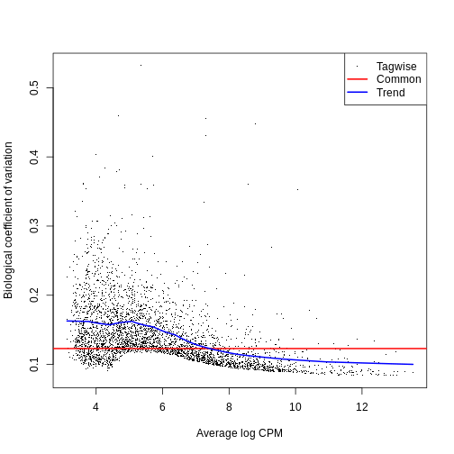
We then fit a Quasi-Likelihood (QL) negative binomial generalized
linear model for each gene. The robust = TRUE parameter
avoids distortions from highly variable clusters. The QL method includes
an additional dispersion parameter for incorporating the uncertainty and
variability of the per-gene variance, which is not well estimated by the
NB dispersions, so the two dispersion types complement each other in the
final analysis.
R
fit <- glmQLFit(y, design, robust = TRUE)
summary(fit$var.prior)
OUTPUT
Length Class Mode
0 NULL NULL R
summary(fit$df.prior)
OUTPUT
Min. 1st Qu. Median Mean 3rd Qu. Max.
0.4795 8.2086 8.2086 8.1932 8.2086 8.2086 QL dispersion estimates for each gene as a function of abundance. Raw estimates (black) are shrunk towards the trend (blue) to yield squeezed estimates (red).
R
plotQLDisp(fit)
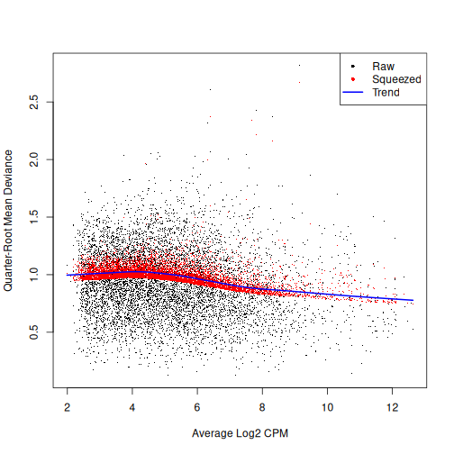
We then use an empirical Bayes quasi-likelihood F-test to test for differential expression (due to tomato injection) for each gene at a False Discovery Rate (FDR) of 5%. The low number of DE genes shwos that tomato injection does not have a major impact on gene expression in mesenchymal cells.
R
res <- glmQLFTest(fit, coef = ncol(design))
summary(decideTests(res))
OUTPUT
factor(tomato)TRUE
Down 7
NotSig 9015
Up 7R
topTags(res)
OUTPUT
Coefficient: factor(tomato)TRUE
logFC logCPM F PValue FDR
ENSMUSG00000010760 -4.1748463 9.019059 1179.87884 6.915577e-12 6.244074e-08
ENSMUSG00000096768 1.9735582 7.901167 459.80008 7.975424e-10 3.600505e-06
ENSMUSG00000086503 -6.4935629 6.391108 318.33187 1.548202e-08 4.659572e-05
ENSMUSG00000035299 1.7717553 5.979361 142.12783 2.559075e-07 5.776472e-04
tomato-td 9.2525004 4.349661 152.46684 1.378176e-06 2.488710e-03
ENSMUSG00000101609 1.3555630 6.389529 91.87594 2.003017e-06 3.014206e-03
ENSMUSG00000019188 -1.0436413 6.583970 78.09934 4.227503e-06 5.452875e-03
ENSMUSG00000045410 -1.7330480 4.216745 69.07170 7.379701e-06 8.067877e-03
ENSMUSG00000024423 0.9692607 6.454340 67.75680 8.041964e-06 8.067877e-03
ENSMUSG00000042607 -0.9743966 6.504271 54.99877 2.026624e-05 1.829838e-02Challenge
Clearly some of the results have low p-values. What about
the effect sizes? What does logFC stand for?
“logFC” stands for log fold-change, typically on a log2 scale. That means a 2-fold increase in gene expression corresponds to a logFC of log2(2) = 1.
ENSMUSG00000037664 seems to have an estimated logFC of
about -8. That points to a large decrease in expression of that gene in
Allantois cells of the tomato positive samples.
Differential Abundance (DA) analysis
In addition to differences in gene expression, we also want to find differences in cell type abundance (aka cell type composition) between conditions (here in tomato positive vs wild type samples).
Therefore, we first quantify the number of cells for each cell type, and then fit a model to detect differences between the injected cells and the background.
This process is very similar to differential expression analysis, but here we apply the analysis on the computed abundances without normalizing the data first.
R
abundances <- table(merged$celltype.mapped, merged$sample)
abundances <- unclass(abundances)
abundances <- abundances[rowSums(abundances) >= 10,]
extra.info <- colData(merged)[match(colnames(abundances), merged$sample),]
y.ab <- DGEList(abundances, samples = extra.info)
design <- model.matrix(~factor(pool) + factor(tomato), y.ab$samples)
y.ab <- estimateDisp(y.ab, design, trend = "none")
fit.ab <- glmQLFit(y.ab, design, robust = TRUE, abundance.trend = FALSE)
Background on compositional effect
We don’t normalize the abundance data with the
calcNormFactors function, as this would implicitly work
under the assumption that most of the input features do not vary between
conditions. This is typically not a reasonable assumption for cell type
abundances as we often only have a few different cell populations that
all can change with different experimental conditions. This means that
here we will not normalize for library size, which in abundance data
corresponds to the total number of cells in each sample (cell type).
However, this can lead our data to be susceptible to compositional effects. “Compositional” refers to the fact that the cluster abundances in a sample are not independent of one another because each cell type is effectively competing for space in the sample. They behave like proportions in that they must sum to 1. If the abundance of cell type A increases under a certain condition, we consequenlty observe less abundance of all other cell types, even if all other cell types are not directly affected by this condition.
Not accounting for compositionality means that any conclusions derived from the DA analysis can be biased by the amount of cells present for each cell type. And it is not uncommon that the number of cells can be strongly unbalanced between cell types, with some low abundance cell types comprising close to 0 percent and certain high abundance cell types making up close to 100 percent of all cells in a sample.
We now look at different approaches for handling the compositional effect.
Assuming most labels do not change
We can use a similar approach as for the DE analysis, assuming that most labels are not changing, in particular if we consider the fact that only few genes where found to be differentially expressed in the analysis above.
To do so, we first normalize the data with
calcNormFactors and then we fit and estimate a QL-model for
the abundance data.
R
y.ab2 <- normLibSizes(y.ab)
y.ab2$samples$norm.factors
OUTPUT
[1] 1.1035079 1.0694452 1.1176773 0.8052317 0.9053692 1.0399272We then use functions from edgeR as before:
R
y.ab2 <- estimateDisp(y.ab2, design, trend = "none")
fit.ab2 <- glmQLFit(y.ab2, design, robust = TRUE, abundance.trend = FALSE)
res2 <- glmQLFTest(fit.ab2, coef = ncol(design))
summary(decideTests(res2))
OUTPUT
factor(tomato)TRUE
Down 2
NotSig 28
Up 0R
topTags(res2, n = 10)
OUTPUT
Coefficient: factor(tomato)TRUE
logFC logCPM F PValue FDR
ExE ectoderm -5.6970752 13.12753 39.324774 4.314632e-08 1.294390e-06
Parietal endoderm -6.9343274 12.37244 27.800509 1.933682e-06 2.900523e-05
Mesenchyme 1.0591666 16.35149 8.350880 5.358128e-03 5.358128e-02
Erythroid3 -0.8284517 17.34256 5.474057 2.264659e-02 1.698494e-01
Neural crest -0.9204499 14.83911 4.857289 3.137771e-02 1.757223e-01
Endothelium 0.9757928 14.15056 4.646158 3.514446e-02 1.757223e-01
Cardiomyocytes 0.8008761 14.96296 3.857402 5.416473e-02 2.321346e-01
Allantois 0.6948559 15.57668 3.148756 8.105810e-02 3.039679e-01
Erythroid2 -0.4331048 15.94889 1.276826 2.629871e-01 8.042373e-01
Caudal neurectoderm -1.3289665 11.10222 1.165182 2.847135e-01 8.042373e-01Testing against a log-fold change threshold
An alternative approach assumes that the composition bias introduces a spurious log2-fold change of no more than a quantity for a non-DA label.
In other words, we interpret this as the maximum log-fold change in the total number of cells given by DA in other labels. On the other hand, when choosing , we should not consider fold-differences in the totals due to differences in capture efficiency or for the case that the size of the original cell population is not attributable to composition bias. We then mitigate the effect of composition biases by testing each label for changes in abundance beyond .
R
res.lfc <- glmTreat(fit.ab, coef = ncol(design), lfc = 1)
summary(decideTests(res.lfc))
OUTPUT
factor(tomato)TRUE
Down 2
NotSig 28
Up 0R
topTags(res.lfc)
OUTPUT
Coefficient: factor(tomato)TRUE
logFC unshrunk.logFC logCPM PValue
ExE ectoderm -5.5058860 -5.9338248 13.06786 5.592128e-06
Parietal endoderm -6.5876372 -27.4412824 12.30357 1.082776e-04
Mesenchyme 1.1585522 1.1597776 16.35506 1.421326e-01
Endothelium 1.0472338 1.0527597 14.14696 2.202573e-01
Caudal neurectoderm -1.4667120 -1.6193586 11.09934 3.113339e-01
Cardiomyocytes 0.8596508 0.8622274 14.96877 3.533892e-01
Neural crest -0.8308892 -0.8334466 14.83510 3.741203e-01
Def. endoderm 0.7232072 0.7363347 12.50291 4.281522e-01
Allantois 0.7783523 0.7797216 15.54827 4.323205e-01
Erythroid3 -0.7249839 -0.7253517 17.28592 5.154048e-01
FDR
ExE ectoderm 0.0001677638
Parietal endoderm 0.0016241640
Mesenchyme 0.9868717188
Endothelium 0.9868717188
Caudal neurectoderm 0.9868717188
Cardiomyocytes 0.9868717188
Neural crest 0.9868717188
Def. endoderm 0.9868717188
Allantois 0.9868717188
Erythroid3 0.9868717188Addionally, the choice of can be guided by other external experimental data, like a previous or a pilot experiment.
Exercises
Exercise 1: Heatmaps
Use the pheatmap package to create a heatmap of the
abundances table. Does it comport with the model results?
You can simply hand pheatmap() a matrix as its only
argument. pheatmap() has a million options you can adjust,
but the defaults are usually pretty good. Try to overlay sample-level
information with the annotation_col argument for an extra
challenge.
R
pheatmap(y.ab$counts)
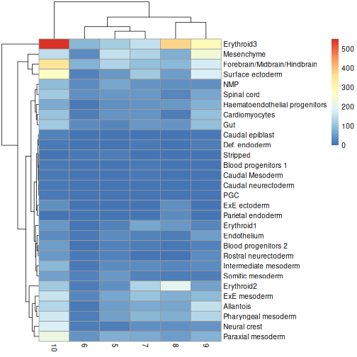
R
anno_df <- y.ab$samples[,c("tomato", "pool")]
anno_df$pool = as.character(anno_df$pool)
anno_df$tomato <- ifelse(anno_df$tomato,
"tomato+",
"tomato-")
pheatmap(y.ab$counts,
annotation_col = anno_df)
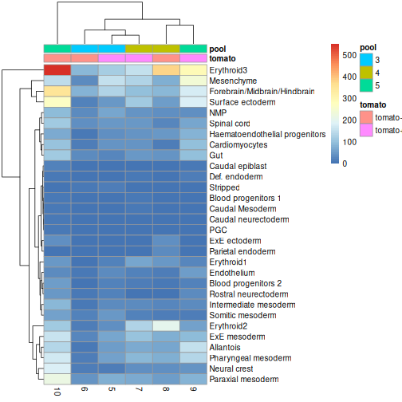
The top DA result was a decrease in ExE ectoderm in the tomato
condition, which you can sort of see, especially if you
log1p() the counts or discard rows that show much higher
values. ExE ectoderm counts were much higher in samples 8 and 10
compared to 5, 7, and 9.
Exercise 2: Model specification and comparison
Try re-running the pseudobulk DGE with and without the
pool factor in the design specification. Compare the logFC
estimates and the distribution of p-values for the
Erythroid3 cell type.
R
current <- summed[, summed$celltype.mapped == "Erythroid3"]
y <- DGEList(assay(current, "sums"),
samples = colData(current))
discarded <- current$counts < 10
y <- y[,!discarded]
keep <- filterByExpr(y, group = current$tomato)
y <- y[keep,]
y <- normLibSizes(y)
design <- model.matrix(~factor(pool) + factor(tomato),
data = y$samples)
design2 <- model.matrix(~factor(tomato),
data = y$samples)
y2 <- estimateDisp(y, design)
y <- estimateDisp(y, design)
fit <- glmQLFit(y, design, robust = TRUE)
fit2 <- glmQLFit(y2, design2, robust = TRUE)
res <- glmQLFTest(fit, coef = ncol(design))
res2 <- glmQLFTest(fit2, coef = ncol(design2))
summary(decideTests(res))
OUTPUT
factor(tomato)TRUE
Down 8
NotSig 8624
Up 10R
topTags(res)
OUTPUT
Coefficient: factor(tomato)TRUE
logFC logCPM F PValue FDR
ENSMUSG00000086503 -9.1403564 6.664619 1395.3451 4.491709e-11 3.881735e-07
ENSMUSG00000038859 3.8684957 2.793436 240.5356 5.323744e-07 1.536032e-03
ENSMUSG00000097908 4.0772400 3.060173 237.9787 5.511219e-07 1.536032e-03
ENSMUSG00000059325 6.6565587 1.857858 138.2581 7.109613e-07 1.536032e-03
ENSMUSG00000037664 -4.4312177 2.337724 145.8128 1.225296e-06 2.117801e-03
ENSMUSG00000101609 1.2794502 6.498571 152.3911 2.648521e-06 3.814753e-03
ENSMUSG00000096768 1.9469179 8.041032 133.3206 4.303776e-06 5.313319e-03
tomato-td 9.2570401 2.698642 278.5471 5.381839e-06 5.813732e-03
ENSMUSG00000010760 -2.7541846 3.206595 120.4776 6.428423e-06 6.172715e-03
ENSMUSG00000031781 0.7973939 6.672826 114.0050 7.567371e-06 6.539722e-03R
topTags(res2)
OUTPUT
Coefficient: factor(tomato)TRUE
logFC logCPM F PValue FDR
ENSMUSG00000038859 3.8891253 2.793436 210.81260 1.138182e-08 5.904026e-05
ENSMUSG00000097908 4.1020093 3.060173 203.71418 1.366356e-08 5.904026e-05
ENSMUSG00000037664 -4.4274045 2.337724 131.43926 6.881303e-08 1.982274e-04
tomato-td 9.1979512 2.698642 197.26985 1.297479e-07 2.803204e-04
ENSMUSG00000059325 6.5395263 1.857858 86.87330 2.459110e-07 4.250325e-04
ENSMUSG00000035299 1.6684064 5.834448 112.32539 3.056729e-07 4.402708e-04
ENSMUSG00000086503 -9.3179645 6.664619 154.42833 5.768549e-07 7.121686e-04
ENSMUSG00000045410 -1.8968786 3.326727 67.23906 4.144826e-06 4.477448e-03
ENSMUSG00000091993 -1.0639612 5.158848 60.03814 7.194058e-06 6.907894e-03
ENSMUSG00000031781 0.7963197 6.672826 44.58316 2.946396e-05 2.309358e-02We can see that in this case, the logFC estimates are largely
consistent between the two models, which tells us that the inclusion of
the pool factor in the model doesn’t strongly influence the
estimate of the tomato coefficients in this case.
If there were large shifts in the logFC estimates, that’s a sign that the design specification change has a large impact on how the model sees the data. If that happens, you’ll need to think carefully and critically about what variables should and should not be included in the model formula.
Extension challenge 1: Group effects
Having multiple independent samples in each experimental group is always helpful, but it’s particularly important when it comes to batch effect correction. Why?
It’s important to have multiple samples within each experimental group because it helps the batch effect correction algorithm distinguish differences due to batch effects (uninteresting) from differences due to group/treatment/biology (interesting).
Imagine you had one sample that received a drug treatment and one that did not, each with 10,000 cells. They differ substantially in expression of gene X. Is that an important scientific finding? You can’t tell for sure, because the effect of drug is indistinguishable from a sample-wise batch effect. But if the difference in gene X holds up when you have five treated samples and five untreated samples, now you can be a bit more confident. Many batch effect correction methods will take information on experimental factors as additional arguments, which they can use to help remove batch effects while retaining experimental differences.
- Batch effects are systematic technical differences in the observed expression in cells measured in different experimental batches.
- Computational removal of batch-to-batch variation with the
correctMnn.se()function from the scrapper package allows us to combine data across multiple batches for a consolidated downstream analysis. - Differential expression (DE) analysis of replicated multi-condition scRNA-seq experiments is typically based on pseudo-bulk expression profiles, generated by summing counts for all cells with the same combination of label and sample.
- The
aggregateAcrossCells.se()function from the scrapper package facilitates the creation of pseudo-bulk samples.
- Differential abundance (DA) analysis aims at identifying significant changes in cell type abundance across conditions.
- DA analysis uses bulk DE methods such as edgeR and DESeq2, which provide suitable statistical models for count data in the presence of limited replication - except that the counts are not of reads per gene, but of cells per label.
Session Info
R
sessionInfo()
OUTPUT
R version 4.6.1 (2026-06-24)
Platform: x86_64-pc-linux-gnu
Running under: Ubuntu 24.04.4 LTS
Matrix products: default
BLAS: /usr/lib/x86_64-linux-gnu/openblas-pthread/libblas.so.3
LAPACK: /usr/lib/x86_64-linux-gnu/openblas-pthread/libopenblasp-r0.3.26.so; LAPACK version 3.12.0
locale:
[1] LC_CTYPE=en_US.UTF-8 LC_NUMERIC=C
[3] LC_TIME=en_US.UTF-8 LC_COLLATE=en_US.UTF-8
[5] LC_MONETARY=en_US.UTF-8 LC_MESSAGES=en_US.UTF-8
[7] LC_PAPER=en_US.UTF-8 LC_NAME=C
[9] LC_ADDRESS=C LC_TELEPHONE=C
[11] LC_MEASUREMENT=en_US.UTF-8 LC_IDENTIFICATION=C
time zone: Etc/UTC
tzcode source: system (glibc)
attached base packages:
[1] stats4 stats graphics grDevices utils datasets methods
[8] base
other attached packages:
[1] pheatmap_1.0.13 scrapper_1.6.3
[3] scater_1.40.2 ggplot2_4.0.3
[5] scuttle_1.22.0 edgeR_4.10.1
[7] limma_3.68.4 MouseGastrulationData_1.26.0
[9] SpatialExperiment_1.22.0 SingleCellExperiment_1.34.0
[11] SummarizedExperiment_1.42.0 Biobase_2.72.0
[13] GenomicRanges_1.64.0 Seqinfo_1.2.0
[15] IRanges_2.46.0 S4Vectors_0.50.1
[17] BiocGenerics_0.58.1 generics_0.1.4
[19] MatrixGenerics_1.24.0 matrixStats_1.5.0
[21] BiocStyle_2.40.0
loaded via a namespace (and not attached):
[1] DBI_1.3.0 formatR_1.14 gridExtra_2.3.1
[4] httr2_1.3.0 rlang_1.3.0 magrittr_2.0.5
[7] otel_0.2.0 compiler_4.6.1 RSQLite_3.53.3
[10] png_0.1-9 vctrs_0.7.3 pkgconfig_2.0.3
[13] crayon_1.5.3 fastmap_1.2.0 dbplyr_2.6.0
[16] magick_2.9.1 XVector_0.52.0 labeling_0.4.3
[19] rmarkdown_2.31 ggbeeswarm_0.7.3 purrr_1.2.2
[22] bit_4.6.0 xfun_0.60 cachem_1.1.0
[25] beachmat_2.28.0 blob_1.3.0 DelayedArray_0.38.2
[28] BiocParallel_1.46.0 irlba_2.3.7 parallel_4.6.1
[31] R6_2.6.1 RColorBrewer_1.1-3 Rcpp_1.1.2
[34] knitr_1.51 splines_4.6.1 Matrix_1.7-6
[37] tidyselect_1.2.1 abind_1.4-8 yaml_2.3.12
[40] viridis_0.6.5 codetools_0.2-20 curl_7.1.0
[43] lattice_0.22-9 tibble_3.3.1 withr_3.0.3
[46] KEGGREST_1.52.2 BumpyMatrix_1.20.0 S7_0.2.2
[49] evaluate_1.0.5 BiocFileCache_3.2.0 ExperimentHub_3.2.0
[52] Biostrings_2.80.1 pillar_1.11.1 BiocManager_1.30.27
[55] filelock_1.0.3 renv_1.2.4 BiocVersion_3.23.1
[58] scales_1.4.0 glue_1.8.1 tools_4.6.1
[61] AnnotationHub_4.2.2 BiocNeighbors_2.6.0 ScaledMatrix_1.20.0
[64] locfit_1.5-9.12 grid_4.6.1 AnnotationDbi_1.74.0
[67] beeswarm_0.4.0 BiocSingular_1.28.0 vipor_0.4.7
[70] cli_3.6.6 rsvd_1.0.5 rappdirs_0.3.4
[73] viridisLite_0.4.3 S4Arrays_1.12.0 dplyr_1.2.1
[76] gtable_0.3.6 digest_0.6.39 SparseArray_1.12.2
[79] ggrepel_0.9.8 rjson_0.2.23 farver_2.1.2
[82] memoise_2.0.1 htmltools_0.5.9 lifecycle_1.0.5
[85] httr_1.4.8 statmod_1.5.2 bit64_4.8.2 Content from Working with large data
Last updated on 2026-09-01 | Edit this page
Overview
Questions
- How do we work with single-cell datasets that are too large to fit in memory?
- How do we speed up single-cell analysis workflows for large datasets?
- How do we convert between popular single-cell data formats?
Objectives
- Work with out-of-memory data representations such as HDF5.
- Speed up single-cell analysis with parallel computation.
- Invoke fast approximations for essential analysis steps.
- Convert
SingleCellExperimentobjects toSeuratObjects andAnnDataobjects.
Motivation
Advances in scRNA-seq technologies have increased the number of cells that can be assayed in routine experiments. Public databases such as GEO are continually expanding with more scRNA-seq studies, while large-scale projects such as the Human Cell Atlas are expected to generate data for billions of cells. For effective data analysis, the computational methods need to scale with the increasing size of scRNA-seq data sets. This section discusses how we can use various aspects of the Bioconductor ecosystem to tune our analysis pipelines for greater speed and efficiency.
Out of memory representations
The count matrix is the central structure around which our analyses
are based. In most of the previous chapters, this has been held fully in
memory as a dense matrix or as a sparse
dgCMatrix. Howevever, in-memory representations may not be
feasible for very large data sets, especially on machines with limited
memory. For example, the 1.3 million brain cell data set from 10X
Genomics (Zheng et al.,
2017) would require over 100 GB of RAM to hold as a
matrix and around 30 GB as a dgCMatrix. This
makes it challenging to explore the data on anything less than a HPC
system.
The obvious solution is to use a file-backed matrix representation where the data are held on disk and subsets are retrieved into memory as requested. While a number of implementations of file-backed matrices are available (e.g., bigmemory, matter), we will be using the implementation from the HDF5Array package. This uses the popular HDF5 format as the underlying data store, which provides a measure of standardization and portability across systems. We demonstrate with a subset of 20,000 cells from the 1.3 million brain cell data set, as provided by the TENxBrainData package.
R
library(TENxBrainData)
sce.brain <- TENxBrainData20k()
R
sce.brain
OUTPUT
class: SingleCellExperiment
dim: 27998 20000
metadata(0):
assays(1): counts
rownames: NULL
rowData names(2): Ensembl Symbol
colnames: NULL
colData names(4): Barcode Sequence Library Mouse
reducedDimNames(0):
mainExpName: NULL
altExpNames(0):Examination of the SingleCellExperiment object indicates
that the count matrix is a HDF5Matrix. From a comparison of
the memory usage, it is clear that this matrix object is simply a stub
that points to the much larger HDF5 file that actually contains the
data. This avoids the need for large RAM availability during
analyses.
R
counts(sce.brain)
OUTPUT
<27998 x 20000> HDF5Matrix object of type "integer":
[,1] [,2] [,3] [,4] ... [,19997] [,19998] [,19999]
[1,] 0 0 0 0 . 0 0 0
[2,] 0 0 0 0 . 0 0 0
[3,] 0 0 0 0 . 0 0 0
[4,] 0 0 0 0 . 0 0 0
[5,] 0 0 0 0 . 0 0 0
... . . . . . . . .
[27994,] 0 0 0 0 . 0 0 0
[27995,] 0 0 0 1 . 0 2 0
[27996,] 0 0 0 0 . 0 1 0
[27997,] 0 0 0 0 . 0 0 0
[27998,] 0 0 0 0 . 0 0 0
[,20000]
[1,] 0
[2,] 0
[3,] 0
[4,] 0
[5,] 0
... .
[27994,] 0
[27995,] 0
[27996,] 0
[27997,] 0
[27998,] 0R
object.size(counts(sce.brain))
OUTPUT
2496 bytesR
file.size(path(counts(sce.brain)))
OUTPUT
[1] 76264332Manipulation of the count matrix will generally result in the
creation of a DelayedArray object from the DelayedArray
package. This remembers the operations to be applied to the counts and
stores them in the object, to be executed when the modified matrix
values are realized for use in calculations. The use of delayed
operations avoids the need to write the modified values to a new file at
every operation, which would unnecessarily require time-consuming disk
I/O.
R
tmp <- counts(sce.brain)
tmp <- log2(tmp + 1)
tmp
OUTPUT
<27998 x 20000> DelayedMatrix object of type "double":
[,1] [,2] [,3] ... [,19999] [,20000]
[1,] 0 0 0 . 0 0
[2,] 0 0 0 . 0 0
[3,] 0 0 0 . 0 0
[4,] 0 0 0 . 0 0
[5,] 0 0 0 . 0 0
... . . . . . .
[27994,] 0 0 0 . 0 0
[27995,] 0 0 0 . 0 0
[27996,] 0 0 0 . 0 0
[27997,] 0 0 0 . 0 0
[27998,] 0 0 0 . 0 0Many functions described in the previous workflows are capable of
accepting HDF5Matrix objects. This is powered by the
availability of common methods for all matrix representations (e.g.,
subsetting, combining, methods from DelayedMatrixStats
as well as representation-agnostic C++ code using beachmat. For
example, we compute QC metrics below with the same
computeRnaQcMetrics() function that we used in the other
workflows.
R
library(scrapper)
is.mito <- grepl("^mt-", rowData(sce.brain)$Symbol)
qcstats <- computeRnaQcMetrics(counts(sce.brain),
subsets = list(mito = is.mito))
qcstats
OUTPUT
DataFrame with 20000 rows and 3 columns
sum detected subsets
<numeric> <integer> <DataFrame>
1 3060 1546 0.0401961
2 3500 1694 0.0337143
3 3092 1613 0.0187581
4 4420 2050 0.0296380
5 3771 1813 0.0265182
... ... ... ...
19996 4431 2050 0.02866170
19997 6988 2704 0.00858615
19998 8749 2988 0.03486113
19999 3842 1711 0.03357626
20000 1775 945 0.01464789Needless to say, data access from file-backed representations is slower than that from in-memory representations. The time spent retrieving data from disk is an unavoidable cost of reducing memory usage. Whether this is tolerable depends on the application. One example usage pattern involves performing the heavy computing quickly with in-memory representations on HPC systems with plentiful memory, and then distributing file-backed counterparts to individual users for exploration and visualization on their personal machines.
Parallelization
Parallelization of calculations across genes or cells is an obvious strategy for speeding up scRNA-seq analysis workflows.
Many packages/functions have built-in parallelization via arguments
called num.threads, cores, Ncpus,
etc. or by allowing the user to set options("mc.cores").
These arguments/settings are often the best and simplest choice, so look
for these first.
In the Bioconductor ecosystem, BiocParallel
package provides a common interface for parallel computing, usually
presenting as a BPPARAM argument in compatible functions.
We can also use BiocParallel with more expressive functions
directly through the package’s interface.
Basic use
R
library(BiocParallel)
BiocParallel makes it quite easy to iterate over a
vector and distribute the computation across workers using the
bplapply function. Basic knowledge of lapply
is required.
In this example, we find the square root of a vector of numbers in
parallel by indicating the BPPARAM argument in
bplapply.
R
param <- MulticoreParam(workers = 2)
bplapply(
X = c(4, 9, 16, 25),
FUN = sqrt,
BPPARAM = param
)
OUTPUT
[[1]]
[1] 2
[[2]]
[1] 3
[[3]]
[1] 4
[[4]]
[1] 5Many Bioconductor functions have BPPARAM arguments.
Whenever you see that, you can set it to your preferred parameterization
(param in the example above) to enable parallelization.
Note that parallel execution with MulticoreParam() is
not supported on Windows. See ?SnowParam() as an
alternative.
There exists a diverse set of parallelization backends depending on
available hardware and operating systems. Beyond parallelizing across
cores/threads on the host machine, you can also submit jobs on a HPC job
scheduler (e.g. Slurm) using the BatchtoolsParam class. See
here
for details.
Parallelization is best suited for independent, CPU-intensive tasks where the division of labor results in a concomitant reduction in compute time. It is not suited for tasks that are bounded by other compute resources, e.g., memory or file I/O (though the latter is less of an issue on HPC systems with parallel read/write). In particular, R itself is inherently single-core, so many of the parallelization backends involve (i) setting up one or more separate R sessions, (ii) loading the relevant packages and (iii) transmitting the data to that session. Depending on the nature and size of the task, this overhead may outweigh any benefit from parallel computing. While the default behavior of the parallel job managers often works well for simple cases, it is sometimes necessary to explicitly specify what data/libraries are sent to / loaded on the parallel workers in order to avoid unnecessary overhead.
Fast approximations
Nearest neighbor searching
Identification of neighbouring cells in PC or expression space is a
common procedure that is used in many functions, e.g.,
buildSnnGraph() in clusterGraph.se(). One can
favour accuracy over speed by using an exact nearest neighbour (NN)
search, implemented with the \(k\)-means for \(k\)-nearest neighbours algorithm. However,
for large data sets, it may be preferable to use a faster approximate
approach.
The BiocNeighbors
framework makes it easy to switch between search options by simply
changing the BNPARAM argument in compatible functions. To
demonstrate, we will use the wild-type chimera data for which we had
applied graph-based clustering using the Louvain algorithm for community
detection:
R
library(MouseGastrulationData)
library(BiocNeighbors)
sce <- WTChimeraData(samples = 5, type = "processed") |>
normalizeRnaCounts.se() |>
chooseRnaHvgs.se()
sce <- sce |>
runPca.se(features = rowData(sce)$hvg)
For the sake of demonstration, we’ll compare the cluster assignments with approximate versus exact algorithms.
R
pc_mat <- reducedDim(sce, "PCA") |> t()
gr_apx <- buildSnnGraph(pc_mat) # defaults to AnnoyParam()
gr_ext <- buildSnnGraph(pc_mat, BNPARAM = KmknnParam())
cl_apx <- clusterGraph(gr_apx)
cl_ext <- clusterGraph(gr_ext)
table(cl_apx$membership,
cl_ext$membership)
OUTPUT
1 2 3 4 5 6 7 8 9 10 11 12 13 14 15 16 17
1 89 0 0 0 0 0 0 0 0 0 0 0 0 0 0 0 0
2 0 86 0 0 0 0 0 0 0 0 0 0 0 0 0 0 0
3 0 1 126 0 0 0 0 0 0 0 0 0 1 0 0 0 0
4 0 0 0 348 0 0 0 0 0 0 0 0 0 0 0 0 0
5 1 0 0 0 222 0 0 0 0 2 0 1 0 0 0 0 0
6 0 0 0 0 0 251 0 0 0 0 0 0 0 0 1 0 0
7 0 0 0 0 0 1 134 0 0 0 0 0 0 0 0 0 0
8 0 0 0 0 0 0 0 85 0 0 0 0 0 0 0 0 0
9 0 0 0 0 0 0 0 0 108 0 0 0 0 0 0 0 0
10 0 0 0 0 4 0 0 0 0 126 0 0 0 0 0 0 0
11 0 0 0 0 0 0 0 0 0 8 135 0 0 0 0 1 0
12 0 2 0 0 2 0 0 0 0 0 0 181 0 0 0 0 0
13 0 0 0 0 0 0 0 0 0 2 0 0 183 0 0 0 0
14 0 0 0 0 0 0 0 0 0 0 0 0 0 61 0 0 0
15 0 0 0 0 0 1 0 0 0 2 0 0 0 0 150 0 0
16 20 0 0 0 0 0 0 0 0 0 0 0 0 0 1 0 0
17 0 0 0 0 0 0 0 0 0 0 0 0 0 0 0 25 0
18 0 0 0 3 0 0 0 0 0 0 0 0 1 0 0 0 46You can see that although they’re pretty close, there’s some disagreement.
Singular value decomposition
Singular
value decomposition (SVD) is the algorithm underlying PCA. The
default base::svd() function performs an exact SVD that is
not performant for large datasets.
Under the hood, scrapper uses an algorithm called
“Implicitly Restarted Lanczos Bidiagonalization Algorithm” (IRLBA). This
yields a fast and accurate approximation for a set number of PC
embeddings.
For the sake of demonstration, we’ll compare base::svd()
against runPca() on the first 500 HVGs. We convert the
log-counts to a standard dense matrix first
R
hvg_subset = rowData(sce)$hvg |> which() |> head(500)
input_mat <- logcounts(sce)[hvg_subset,] |>
as.matrix() |>
scale(center = TRUE, scale = FALSE)
system.time({s1 <- svd(t(input_mat))})
OUTPUT
user system elapsed
0.398 0.142 0.469 R
system.time({i1 <- runPca(input_mat)})
OUTPUT
user system elapsed
0.044 0.000 0.044 Beyond IRLBA, another algorithm called randomized SVD (RSVD) goes further in the “more speed, more approximation error” direction which can be beneficial for larger datasets. See BiocSingular for more detail.
Challenge
The uncertainty from approximation error is sometimes aggravating. “How do I know the approximation error isn’t throwing me off?” One way to alleviate this feeling is to quantify the approximation error on a small test set. Compare PC1 of the IRLBA and exact embeddings.
While you can get the PC embeddings from the SVD results with some
simple linear algebra, you may find it easier to get them using the
function prcomp() which provides them pre-computed in a
component called x.
R
library(ggplot2)
exact <- prcomp(t(input_mat))
test_diff <- i1$components[1,1] - exact$x[1,1]
if (test_diff > .1) {
i1$components <- -1 * i1$components
}
comp_df <- data.frame(
exact = exact$x[,"PC1"],
irlba = i1$components[1,]
)
comp_df$diff = comp_df$exact - comp_df$irlba
ggplot(comp_df, aes(exact, irlba)) +
geom_abline(lty = 2, color = 'grey') +
geom_point()
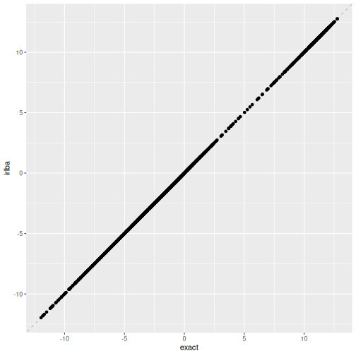
R
ggplot(comp_df, aes(diff)) +
geom_histogram()
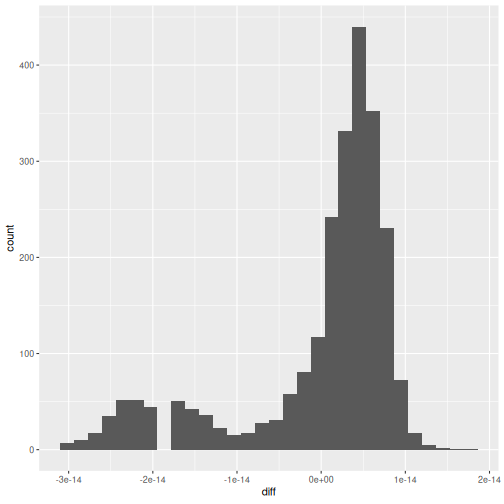
Note that we check a test point of both results to see if they’re close, and if not multiply one set of embeddings by -1. This is because the signs of PC embeddings are not uniquely identifiable in general, so different algorithms can sometimes come with flipped signs.
You can see they’re very close.
Interoperability with popular single-cell analysis ecosytems
Seurat
Seurat is an R package designed for QC, analysis, and exploration of single-cell RNA-seq data. Seurat can be used to identify and interpret sources of heterogeneity from single-cell transcriptomic measurements, and to integrate diverse types of single-cell data. Seurat is developed and maintained by the Satija lab and is released under the MIT license.
Although the basic processing of single-cell data with Bioconductor
packages (described in the OSCA book) and
with Seurat is very similar and will produce overall roughly identical
results, there is also complementary functionality with regard to cell
type annotation, dataset integration, and downstream analysis. To make
the most of both ecosystems it is therefore beneficial to be able to
easily switch between a SeuratObject and a
SingleCellExperiment. See also the Seurat conversion
vignette for conversion to/from other popular single cell formats
such as the AnnData format used by scanpy.
Seurat provides helper functions
as.SingleCellExperiment() and as.Seurat() to
convert back and forth between SCEs and Seurat objects.
Scanpy
Scanpy is a scalable toolkit for analyzing single-cell gene expression data built jointly with anndata. It includes preprocessing, visualization, clustering, trajectory inference and differential expression testing. The Python-based implementation efficiently deals with datasets of more than one million cells. Scanpy is developed and maintained by the Theis lab and is released under a BSD-3-Clause license. Scanpy is part of the scverse, a Python-based ecosystem for single-cell omics data analysis.
At the core of scanpy’s single-cell functionality is the
anndata data structure, scanpy’s integrated single-cell
data container, which is conceptually very similar to Bioconductor’s
SingleCellExperiment class.
Bioconductor’s zellkonverter
package provides a lightweight interface between the Bioconductor
SingleCellExperiment data structure and the Python
AnnData-based single-cell analysis environment. The idea is
to enable users and developers to easily move data between these
frameworks to construct a multi-language analysis pipeline across
R/Bioconductor and Python.
R
library(zellkonverter)
The readH5AD() function can be used to read a
SingleCellExperiment from an H5AD file. Here, we use an
example H5AD file contained in the zellkonverter
package.
R
example_h5ad <- system.file("extdata", "krumsiek11.h5ad",
package = "zellkonverter")
readH5AD(example_h5ad, reader = "R")
OUTPUT
class: SingleCellExperiment
dim: 11 640
metadata(2): highlights iroot
assays(1): X
rownames(11): Gata2 Gata1 ... EgrNab Gfi1
rowData names(0):
colnames(640): 0 1 ... 158-3 159-3
colData names(1): cell_type
reducedDimNames(0):
mainExpName: NULL
altExpNames(0):We can also write a SingleCellExperiment to an H5AD file
with the writeH5AD() function. This is demonstrated below
on the wild-type chimera mouse gastrulation dataset.
R
out.file <- tempfile(fileext = ".h5ad")
writeH5AD(sce, file = out.file)
OUTPUT
Installing pyenv ...
Done! pyenv has been installed to '/github/home/.local/share/r-reticulate/pyenv/bin/pyenv'.
Using Python: /github/home/.pyenv/versions/3.14.0/bin/python3.14
Creating virtual environment '/github/home/.cache/R/basilisk/1.24.0/zellkonverter/1.22.0/zellkonverterAnnDataEnv-0.12.3' ... OUTPUT
Done!
Installing packages: pip, wheel, setuptoolsOUTPUT
Installing packages: 'anndata==0.12.3', 'h5py==3.15.1', 'natsort==8.4.0', 'numpy==2.3.4', 'pandas==2.3.3', 'scipy==1.16.2'OUTPUT
Virtual environment '/github/home/.cache/R/basilisk/1.24.0/zellkonverter/1.22.0/zellkonverterAnnDataEnv-0.12.3' successfully created.The resulting H5AD file can then be read into Python using scanpy’s read_h5ad function and then directly used in compatible Python-based analysis frameworks.
Exercises
Exercise 1: Out of memory representation
Write the counts matrix of one sample from the wild-type chimera mouse gastrulation dataset to an HDF5 file. Create another counts matrix that reads the data from the HDF5 file. Compare memory usage of holding the entire matrix in memory as opposed to holding the data out of memory.
See the HDF5Array function for reading from HDF5 and the
writeHDF5Array function for writing to HDF5 from the HDF5Array
package.
R
wt_out <- tempfile(fileext = ".h5")
wt_counts <- counts(WTChimeraData(samples = 5))
writeHDF5Array(wt_counts,
name = "wt_counts",
file = wt_out)
OUTPUT
<29453 x 2411> sparse HDF5Matrix object of type "double":
cell_9769 cell_9770 cell_9771 ... cell_12178 cell_12179
ENSMUSG00000051951 0 0 0 . 0 0
ENSMUSG00000089699 0 0 0 . 0 0
ENSMUSG00000102343 0 0 0 . 0 0
ENSMUSG00000025900 0 0 0 . 0 0
ENSMUSG00000025902 0 0 0 . 0 0
... . . . . . .
ENSMUSG00000095041 0 0 1 . 0 0
ENSMUSG00000063897 0 0 1 . 0 2
ENSMUSG00000096730 0 0 0 . 0 0
ENSMUSG00000095742 0 0 0 . 0 0
tomato-td 1 1 1 . 0 1R
oom_wt <- HDF5Array(wt_out, "wt_counts")
object.size(wt_counts)
OUTPUT
157215216 bytesR
object.size(oom_wt)
OUTPUT
2488 bytesExercise 2: Parallelization
Compare the runtime of runPca() when called with
different numbers of threads and compare the run time. Do you reach a
limit where additional threads starts to hurt performance?
R
system.time({runPca(logcounts(sce))})
system.time({runPca(logcounts(sce), num.threads = 2)})
# Try others as your system allows
# system.time({runPca(logcounts(sce), num.threads = N)})
Further Reading
- OSCA book, Chapter 14: Dealing with big data
- The
BiocParallelintro vignette. - Modern Statistics for Modern Biology, Ch. 7 Multivariate Analysis
- Out-of-memory representations can be used to work with single-cell datasets that are too large to fit in memory.
- Parallelization of calculations across genes or cells is an effective strategy for speeding up analysis of large single-cell datasets.
- Fast approximations for nearest neighbor search and singular value composition can speed up essential steps of single-cell analysis with minimal loss of accuracy.
- Converter functions between existing single-cell data formats enable analysis workflows that leverage complementary functionality from poplular single-cell analysis ecosystems.
Session Info
R
sessionInfo()
OUTPUT
R version 4.6.1 (2026-06-24)
Platform: x86_64-pc-linux-gnu
Running under: Ubuntu 24.04.4 LTS
Matrix products: default
BLAS: /usr/lib/x86_64-linux-gnu/openblas-pthread/libblas.so.3
LAPACK: /usr/lib/x86_64-linux-gnu/openblas-pthread/libopenblasp-r0.3.26.so; LAPACK version 3.12.0
locale:
[1] LC_CTYPE=en_US.UTF-8 LC_NUMERIC=C
[3] LC_TIME=en_US.UTF-8 LC_COLLATE=en_US.UTF-8
[5] LC_MONETARY=en_US.UTF-8 LC_MESSAGES=en_US.UTF-8
[7] LC_PAPER=en_US.UTF-8 LC_NAME=C
[9] LC_ADDRESS=C LC_TELEPHONE=C
[11] LC_MEASUREMENT=en_US.UTF-8 LC_IDENTIFICATION=C
time zone: Etc/UTC
tzcode source: system (glibc)
attached base packages:
[1] stats4 stats graphics grDevices utils datasets methods
[8] base
other attached packages:
[1] zellkonverter_1.22.0 ggplot2_4.0.3
[3] BiocNeighbors_2.6.0 MouseGastrulationData_1.26.0
[5] SpatialExperiment_1.22.0 BiocParallel_1.46.0
[7] scrapper_1.6.3 TENxBrainData_1.32.0
[9] HDF5Array_1.40.0 h5mread_1.4.0
[11] rhdf5_2.56.0 DelayedArray_0.38.2
[13] SparseArray_1.12.2 S4Arrays_1.12.0
[15] abind_1.4-8 Matrix_1.7-6
[17] SingleCellExperiment_1.34.0 SummarizedExperiment_1.42.0
[19] Biobase_2.72.0 GenomicRanges_1.64.0
[21] Seqinfo_1.2.0 IRanges_2.46.0
[23] S4Vectors_0.50.1 BiocGenerics_0.58.1
[25] generics_0.1.4 MatrixGenerics_1.24.0
[27] matrixStats_1.5.0 BiocStyle_2.40.0
loaded via a namespace (and not attached):
[1] DBI_1.3.0 httr2_1.3.0 formatR_1.14
[4] rlang_1.3.0 magrittr_2.0.5 otel_0.2.0
[7] compiler_4.6.1 RSQLite_3.53.3 dir.expiry_1.20.0
[10] png_0.1-9 vctrs_0.7.3 pkgconfig_2.0.3
[13] crayon_1.5.3 fastmap_1.2.0 dbplyr_2.6.0
[16] magick_2.9.1 XVector_0.52.0 labeling_0.4.3
[19] rmarkdown_2.31 purrr_1.2.2 bit_4.6.0
[22] xfun_0.60 cachem_1.1.0 beachmat_2.28.0
[25] jsonlite_2.0.0 blob_1.3.0 rhdf5filters_1.24.1
[28] Rhdf5lib_2.0.0 parallel_4.6.1 R6_2.6.1
[31] RColorBrewer_1.1-3 reticulate_1.46.0 Rcpp_1.1.2
[34] knitr_1.51 tidyselect_1.2.1 yaml_2.3.12
[37] codetools_0.2-20 curl_7.1.0 lattice_0.22-9
[40] tibble_3.3.1 withr_3.0.3 KEGGREST_1.52.2
[43] BumpyMatrix_1.20.0 S7_0.2.2 evaluate_1.0.5
[46] BiocFileCache_3.2.0 ExperimentHub_3.2.0 Biostrings_2.80.1
[49] pillar_1.11.1 BiocManager_1.30.27 filelock_1.0.3
[52] renv_1.2.4 BiocVersion_3.23.1 scales_1.4.0
[55] glue_1.8.1 tools_4.6.1 AnnotationHub_4.2.2
[58] grid_4.6.1 AnnotationDbi_1.74.0 basilisk_1.24.0
[61] cli_3.6.6 rappdirs_0.3.4 dplyr_1.2.1
[64] gtable_0.3.6 digest_0.6.39 rjson_0.2.23
[67] farver_2.1.2 memoise_2.0.1 htmltools_0.5.9
[70] lifecycle_1.0.5 httr_1.4.8 bit64_4.8.2 Content from Accessing data from the Human Cell Atlas (HCA)
Last updated on 2026-09-01 | Edit this page
Overview
Questions
- How to obtain single-cell reference maps from the Human Cell Atlas?
Objectives
- Learn about different resources for public single-cell RNA-seq data.
- Access data from the Human Cell Atlas using the
cellNexuspackage. - Query for cells of interest and download them into a
SingleCellExperimentobject.
Single Cell data sources
HCA Project
The Human Cell Atlas (HCA) is a large project that aims to learn from and map every cell type in the human body. The project extracts spatial and molecular characteristics in order to understand cellular function and networks. It is an international collaborative that charts healthy cells in the human body at all ages. There are about 37.2 trillion cells in the human body. To read more about the project, head over to their website at https://www.humancellatlas.org.
CELLxGENE
CELLxGENE is a database and a suite of tools that help scientists to find, download, explore, analyze, annotate, and publish single cell data. It includes several analytic and visualization tools to help you to discover single cell data patterns. To see the list of tools, browse to https://cellxgene.cziscience.com/.
CELLxGENE | Census
The Census provides efficient computational tooling to access, query, and analyze all single-cell RNA data from CZ CELLxGENE Discover. Using a new access paradigm of cell-based slicing and querying, you can interact with the data through TileDB-SOMA, or get slices in AnnData or Seurat objects, thus accelerating your research by significantly minimizing data harmonization at https://chanzuckerberg.github.io/cellxgene-census/.
cellNexus
cellNexus is “a
query interface for programmatic exploration and retrieval of
harmonised, curated, and reannotated CELLxGENE human-cell-atlas data.”
This is what we’ll be using in this lesson for the most part since
having the data pre-harmonised and pre-annotated makes life simpler.
Data Sources in R / Bioconductor
There are a few options to access single cell data with R / Bioconductor.
| Package | Target | Description |
|---|---|---|
| cellxgenedp | CellxGene | Human and mouse SC data including HCA |
| cellNexus | CellxGene | fine-grained query capable CELLxGENE data including HCA |
Installation
If you don’t have cellNexus already:
R
if (!requireNamespace("BiocManager", quietly = TRUE))
install.packages("BiocManager")
BiocManager::install("MangiolaLaboratory/cellNexus")
HCA Metadata
The metadata allows the user to get a lay of the land of what is available via the package. In this example, we are using the sample database URL which allows us to get a small and quick subset of the available metadata.
R
sample_url <- cellNexus::SAMPLE_DATABASE_URL
metadata <- get_metadata(cloud_metadata = sample_url) |>
collect()
Some database details: get_metadata() returns a
“connection” to the duckdb server hosting the sample metadata, so we
used the collect() function to pull the corresponding table
into our R session as a data.frame. This is fine for the small sample
database, but for larger tables with huge numbers of rows, it’s
generally better to run a filtered query on the connection and
then collect the much smaller result.
Get a view of the first 10 columns in the metadata with
glimpse():
R
metadata |>
select(1:10) |>
glimpse()
OUTPUT
Rows: 50,151
Columns: 10
$ cell_id <dbl> 15, 16, 17, 18, 19, 20, 14, 2, 3, 4, 5, 2…
$ dataset_id <chr> "842c6f5d-4a94-4eef-8510-8c792d1124bc", "…
$ sample_id <chr> "1119f4825edbcfb74341b89d9dec4ac8", "1119…
$ sample_ <chr> "1119f4825edbcfb74341b89d9dec4ac8", "1119…
$ experiment___ <chr> "", "", "", "", "", "", "", "", "", "", "…
$ run_from_cell_id <chr> NA, NA, NA, NA, NA, NA, NA, NA, NA, NA, N…
$ sample_heuristic <chr> "182a61cc-b041-4c9b-bf33-1d065115274d___P…
$ age_days <int> 14600, 14600, 14600, 14600, 14600, 14600,…
$ tissue_groups <chr> "breast", "breast", "breast", "breast", "…
$ nFeature_expressed_in_sample <int> 1701, 2438, 2122, 1894, 1876, 1441, 1547,…These are just the first ten, but there are many more metadata columns as we’ll see. Additional metadata from the original CELLxGENE annotations such as sex, disease, and assay type are available. But here we will stick with what’s in the sample database.
A tangent on the pipe operator
The vignette materials provided by cellNexus show the
use of the ‘native’ R pipe. For those not familiar with the pipe
operator (|>), it allows you to chain functions by
passing the left-hand side as the first argument to the function on the
right-hand side. It is used extensively in the tidyverse dialect of
R.
The pipe operator can be read as “and then”. R is very permissive when it comes to whitespace, so it’s common to start a new line after a pipe. Together these points enable users to “chain” complex sequences of commands into readable blocks.
In this example, we start with the built-in mtcars
dataset and then filter to rows where cyl is not equal to
4, and then by each unique cyl value, compute the mean
disp value.
R
mtcars |>
filter(cyl != 4) |>
summarise(.by = cyl,
avg_disp = mean(disp))
OUTPUT
cyl avg_disp
1 6 183.3143
2 8 353.1000Which is equivalent to the following:
R
summarise(filter(mtcars, cyl != 4), .by = cyl, avg_disp = mean(disp))
Exploring the metadata
Let’s examine the metadata to understand what information it contains.
We can tally the tissue types across datasets to see what tissues the experimental data come from:
R
metadata |>
distinct(tissue_groups, dataset_id) |>
count(tissue_groups) |>
arrange(-n)
OUTPUT
# A tibble: 19 × 2
tissue_groups n
<chr> <int>
1 blood 10
2 respiratory system 7
3 bone marrow 6
4 renal system 4
5 breast 3
6 thymus 3
7 cerebral lobes and cortical areas 2
8 female reproductive system 2
9 nasal, oral, and pharyngeal regions 2
10 spleen 2
11 brainstem and cerebellar structures 1
12 endocrine system 1
13 epithelium and mucosal tissues 1
14 lymphatic system 1
15 oesophagus 1
16 sensory-related structures 1
17 small intestine 1
18 stomach 1
19 vasculature 1That is to say, there are 10 studies that investigate blood.
We can do the same for the imputed ethnicities:
R
metadata |>
distinct(imputed_ethnicity, dataset_id) |>
count(imputed_ethnicity)
OUTPUT
# A tibble: 15 × 2
imputed_ethnicity n
<chr> <int>
1 African 7
2 African American 1
3 African American or Afro-Caribbean 1
4 American 1
5 Asian 1
6 East Asian 5
7 European 25
8 Hispanic or Latin American 1
9 Hispanic/Latin American 2
10 Japanese 2
11 Korean 1
12 Singaporean Chinese 1
13 Singaporean Indian 1
14 South Asian 5
15 unknown 17Challenge
Look at the other metadata columns with
colnames(metadata) and inspect a few that catch your
interest.
Let’s look at age_days and
cell_type_unified_ensemble. We’ll collect the results
locally and shuffle the rows here just to see some variability beyond
the first sample listed.
R
metadata |>
select(age_days, cell_type_unified_ensemble) |>
slice_sample(prop = 1)
OUTPUT
# A tibble: 50,151 × 2
age_days cell_type_unified_ensemble
<int> <chr>
1 19892 cd4 th1/th17 em
2 25185 cd8 tem
3 NA t cd4
4 NA cd4 th2 em
5 16425 cd4 th2 em
6 NA treg
7 26280 epithelial
8 26280 t cd4
9 26280 cd4 th1 em
10 NA t cd4
# ℹ 50,141 more rowsYou can see that age_days is commonly NA and cell types are mostly immune related (that’s what was selected for in the sample database).
Downloading single cell data
The data can be provided as either “counts” or counts per million
“cpm” as given by the assays argument in the
get_single_cell_experiment() function. By default, the
SingleCellExperiment provided will contain only the
‘counts’ data.
For the sake of demonstration, we’ll focus this small subset of
samples. We use the filter() function from the
dplyr package to identify cells meeting the following
criteria:
- Cell type: CD4 TCM
- Tissue group: Respiratory system
R
sample_subset <- metadata |>
filter(
cell_type_unified_ensemble == "cd4 tcm" &
tissue_groups == "respiratory system"
)
Out of the 50151 cells in the sample database, 2415 cells meet this criteria.
Now we can use get_single_cell_experiment():
R
sce <- sample_subset |>
get_single_cell_experiment()
sce
OUTPUT
class: SingleCellExperiment
dim: 56239 2415
metadata(0):
assays(1): counts
rownames(56239): ENSG00000121410 ENSG00000268895 ... ENSG00000135605
ENSG00000109501
rowData names(0):
colnames(2415): 3031_1 2077_1 ... 1889_10 330_10
colData names(36): dataset_id sample_id ... atlas_id original_cell_
reducedDimNames(0):
mainExpName: NULL
altExpNames(0):You can provide different arguments to
get_single_cell_experiment() to get different formats or
subsets of the data, like data scaled to counts per million:
R
sample_subset |>
get_single_cell_experiment(assays = "cpm")
OUTPUT
class: SingleCellExperiment
dim: 56239 2415
metadata(0):
assays(1): cpm
rownames(56239): ENSG00000121410 ENSG00000268895 ... ENSG00000135605
ENSG00000109501
rowData names(0):
colnames(2415): 3031_1 2077_1 ... 1889_10 330_10
colData names(36): dataset_id sample_id ... atlas_id original_cell_
reducedDimNames(0):
mainExpName: NULL
altExpNames(0):or data on only specific genes:
R
sce <- sample_subset |>
get_single_cell_experiment(assays = "cpm",
features = "ENSG00000085265") # FCN1
sce
OUTPUT
class: SingleCellExperiment
dim: 1 2415
metadata(0):
assays(1): cpm
rownames(1): ENSG00000085265
rowData names(0):
colnames(2415): 3031_1 2077_1 ... 1889_10 330_10
colData names(36): dataset_id sample_id ... atlas_id original_cell_
reducedDimNames(0):
mainExpName: NULL
altExpNames(0):Save your SingleCellExperiment
Once you have a dataset you’re happy with, you’ll probably want to
save it. The recommended way of saving these
SingleCellExperiment objects is to use
saveHDF5SummarizedExperiment from the
HDF5Array package.
R
sce |>
saveHDF5SummarizedExperiment(dir = "my_sce")
Exercises
Exercise 1: Basic counting + piping
Use count and arrange to get the number of
cells per coarse tissue group in descending order.
We specify dplyr::count here to avoid a function name
conflict with matrixStats::count, which might be loaded if
you ran the saveHDF5SummarizedExperiment() above.
R
metadata |>
dplyr::count(tissue_groups) |>
arrange(-n)
OUTPUT
# A tibble: 19 × 2
tissue_groups n
<chr> <int>
1 respiratory system 36611
2 renal system 10844
3 blood 1242
4 breast 318
5 nasal, oral, and pharyngeal regions 224
6 cerebral lobes and cortical areas 194
7 bone marrow 146
8 female reproductive system 136
9 thymus 99
10 small intestine 72
11 vasculature 48
12 spleen 45
13 lymphatic system 44
14 sensory-related structures 44
15 stomach 35
16 epithelium and mucosal tissues 25
17 endocrine system 12
18 brainstem and cerebellar structures 10
19 oesophagus 2Exercise 2: Tissue & type counting
count() can group by multiple factors by simply adding
another grouping column as an additional argument. 1) Find which tissue
+ cell type combination has the most number of observations in the
sample database and 2) Then find which tissue has the most types of
cells.
R
metadata |>
dplyr::count(tissue_groups, cell_type_unified_ensemble) |>
arrange(-n) |>
head(1)
OUTPUT
# A tibble: 1 × 3
tissue_groups cell_type_unified_ensemble n
<chr> <chr> <int>
1 respiratory system t cd4 15019R
metadata |>
dplyr::count(tissue_groups, cell_type_unified_ensemble) |>
dplyr::count(tissue_groups) |>
arrange(-n) |>
head(1)
OUTPUT
# A tibble: 1 × 2
tissue_groups n
<chr> <int>
1 respiratory system 24Exercise 3: Highly specific cell groups
cellNexus metadata comes with pre-computed QC stats like
mitochondrial percent and feature count. There’s also a utility function
keep_quality_cells() that can pre-filter empty droplets,
dead cells, and doublets. Use that function and filter on other metadata
columns to choose a highly-specific set of cells.
R
metadata |>
keep_quality_cells() |>
filter(tissue_groups == "respiratory system" &
cell_type_unified_ensemble == "t cd4" &
imputed_ethnicity == "East Asian") |>
get_single_cell_experiment()
OUTPUT
class: SingleCellExperiment
dim: 56239 118
metadata(0):
assays(1): counts
rownames(56239): ENSG00000121410 ENSG00000268895 ... ENSG00000135605
ENSG00000109501
rowData names(0):
colnames(118): 5440_1 3381_1 ... 3517_4 3570_4
colData names(36): dataset_id sample_id ... atlas_id original_cell_
reducedDimNames(0):
mainExpName: NULL
altExpNames(0):You can see we don’t get very many cells given the strict set of conditions we used. Reminder that you can also filter on other annotations from CELLxGENE like sex, disease, assay type, etc. if you join them on.
- The
cellNexuspackage provides programmatic access to single-cell reference maps from the Human Cell Atlas. - The package provides functionality to query for cells of interest
and to download them into a
SingleCellExperimentobject.
Session Info
R
sessionInfo()
OUTPUT
R version 4.6.0 (2026-04-24)
Platform: x86_64-pc-linux-gnu
Running under: Ubuntu 24.04.4 LTS
Matrix products: default
BLAS: /usr/lib/x86_64-linux-gnu/openblas-pthread/libblas.so.3
LAPACK: /usr/lib/x86_64-linux-gnu/openblas-pthread/libopenblasp-r0.3.26.so; LAPACK version 3.12.0
locale:
[1] LC_CTYPE=en_US.UTF-8 LC_NUMERIC=C
[3] LC_TIME=en_US.UTF-8 LC_COLLATE=en_US.UTF-8
[5] LC_MONETARY=en_US.UTF-8 LC_MESSAGES=en_US.UTF-8
[7] LC_PAPER=en_US.UTF-8 LC_NAME=C
[9] LC_ADDRESS=C LC_TELEPHONE=C
[11] LC_MEASUREMENT=en_US.UTF-8 LC_IDENTIFICATION=C
time zone: Etc/UTC
tzcode source: system (glibc)
attached base packages:
[1] stats graphics grDevices utils datasets methods base
other attached packages:
[1] dplyr_1.2.1 cellNexus_0.99.30 BiocStyle_2.40.0
loaded via a namespace (and not attached):
[1] SummarizedExperiment_1.42.0 dir.expiry_1.20.0
[3] xfun_0.60 bslib_0.12.0
[5] rhdf5_2.56.0 Biobase_2.72.0
[7] lattice_0.22-9 rhdf5filters_1.24.1
[9] vctrs_0.7.3 tools_4.6.0
[11] generics_0.1.4 parallel_4.6.0
[13] stats4_4.6.0 curl_7.1.0
[15] rclipboard_0.2.1 tibble_3.3.1
[17] anndataR_1.2.1 pkgconfig_2.0.3
[19] Matrix_1.7-6 checkmate_2.3.4
[21] dbplyr_2.6.0 S4Vectors_0.50.1
[23] lifecycle_1.0.5 compiler_4.6.0
[25] zellkonverter_1.22.0 codetools_0.2-20
[27] Seqinfo_1.2.0 httpuv_1.6.17
[29] shinyWidgets_0.9.1 htmltools_0.5.9
[31] sass_0.4.10 yaml_2.3.12
[33] pillar_1.11.1 later_1.4.8
[35] jquerylib_0.1.4 SingleCellExperiment_1.34.0
[37] cachem_1.1.0 DelayedArray_0.38.2
[39] abind_1.4-8 mime_0.13
[41] basilisk_1.24.0 tidyselect_1.2.1
[43] digest_0.6.39 duckdb_1.5.5
[45] purrr_1.2.2 fastmap_1.2.0
[47] grid_4.6.0 cli_3.6.6
[49] SparseArray_1.12.2 magrittr_2.0.5
[51] S4Arrays_1.12.0 h5mread_1.4.0
[53] utf8_1.2.6 withr_3.0.3
[55] filelock_1.0.3 promises_1.5.0
[57] backports_1.5.1 rmarkdown_2.31
[59] XVector_0.52.0 httr_1.4.8
[61] matrixStats_1.5.0 otel_0.2.0
[63] reticulate_1.46.0 png_0.1-9
[65] HDF5Array_1.40.0 shiny_1.14.0
[67] evaluate_1.0.5 knitr_1.51
[69] GenomicRanges_1.64.0 IRanges_2.46.0
[71] rlang_1.3.0 Rcpp_1.1.2
[73] xtable_1.8-8 glue_1.8.1
[75] DBI_1.3.0 formatR_1.14
[77] BiocManager_1.30.27 renv_1.2.4
[79] BiocGenerics_0.58.1 jsonlite_2.0.0
[81] Rhdf5lib_2.0.0 R6_2.6.1
[83] MatrixGenerics_1.24.0